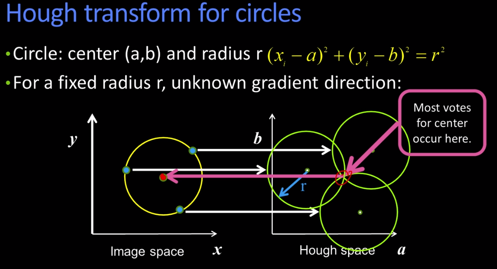
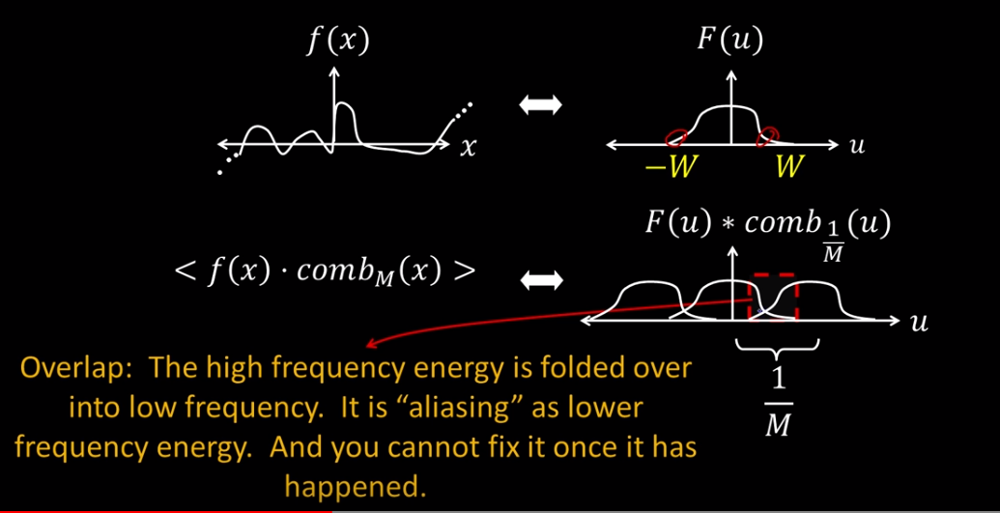
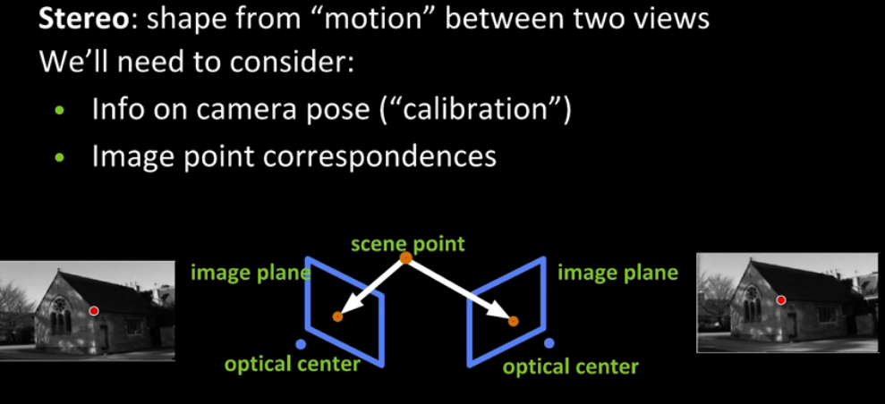
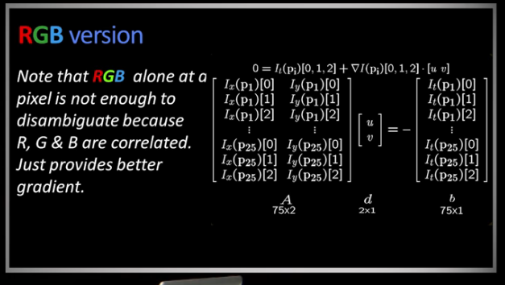
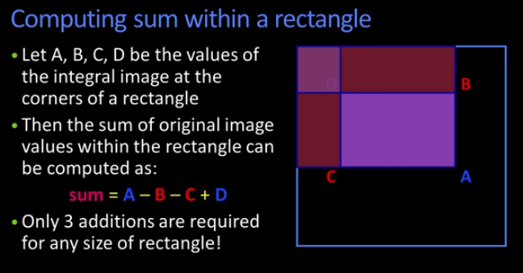
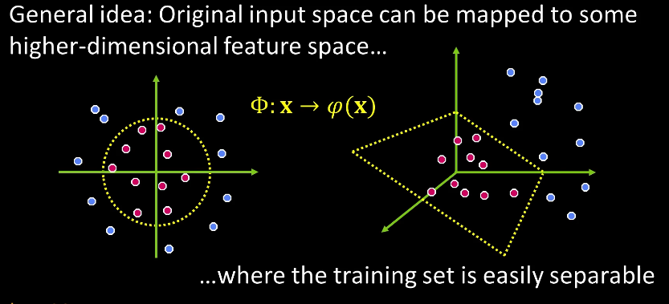

Intro¶
Youtube Playlist
What's the difference vs CP-Computational Photography
Computer Photography is about mostly about scene composition where as Computer Vision(CV) is about identifying the scene and the elements in it. CV leans towards
Computer Vision lies somewhere inside a triangle composed of points representing Math, Algorithms, and real images. Real images often don't fit an algorithm or mathematical model very cleanly.
Course Outline
- Intro
- Image Processing
- Camera models and views
- Features and Matching
- Lightness and Brightness
- Image Motion
- Motion and Tracking
- Classification and Recognition
- Miscellaneous Operations
GOTCHA
Remember than when processing an image as an array. Rows go down and are represented by y, cols go across and are represented by x. This can cause confusion as a matrix element (x,y) represents (col,row) contrary to how we think/write. Normally M(i,j) = ith row, jth column = M(y,x)
Why?
You may wondering why computers think of the top left corner as (0,0) rather than the bottom left which is used in all mathematics. It turns out that computers inherited this from old Television technology. The earliest TVs (aka CRTs) used cathode rays which displayed images by scanning a beam of electrons from Top-left to bottom-right as a series of horizontal lines. The reason why Cathode rays operated this way appears to be lost to history. One theory is that this is similar to how people read. ie a page in book would be read from top-left to bottom-right. Another theory is that matrices are indexed in a similar fashion from the top left ($e_{0,0}$) to the bottom right ($e_{r,c}$)
1AL1 - Environment setup¶
Image Processing¶
2AL1 - Images as functions¶
Consider an image as a function I(x,y) (where I stands for intensity). Often times Image Processing is about taking an image and applying a transform resulting in an image. Ex if we reduce the intensity of a point we effectively blur it.
An Image can be thought of as
- a 2Dim array of numbers with a minimum and maximum
- a function I of x and y ie I(x,y)
- Something generated by a camera
More formally:
An image is a function, f or I, from R^2 to R with a finite range
f:[a,b]x[c,d] -> [min,max] ( this would represent a greyscale image )
( often times 255 is the maximum intensity, but this a pure abstraction. We will often see ranges=(0,1) and even possibly neg numbers )
Let's consider a simple example
For the image above we could express the function as
f: (10,210) x (15,165) -> (0,10)
x-domain y-domain output
Furthermore a colour Image can be expressed as a vector valued function. Each colour is an intensity and can be represented in it's own plane(or channel). A 3-channel color image is a mapping from a 2-dimensional space of locations to a 3-dimensional space of color intensity values.
f: RxR -> RxRxR ($R^3$)
f:[a,b]x[c,d] -> [r(x,y), g(x,y), b(x,y)]
Where r is red, g green and b blue
So far we've focused on the mathemtical expression of an image. A computer however sees a matrix of pixels values represented by integers.
Now let's play a bit with OpenCV2 so we acclimatize ourselves.
from matplotlib import pyplot as plt
import cv2
import numpy as np
d = cv2.imread('CS6476_resources/CS6476_dolphin.PNG')
b = cv2.imread('CS6476_resources/CS6476_bicycle.PNG')
db = b+d # Raw addition amplifies the intensity
db2 = (b/2)+(d/2) # So we divide the intesities
# plt.imshow((db2 * 255).astype(np.uint8))
# Pretty fuzzy eh?
# Blending ( aka Alpha Blending is a weighted addition)
def myblend(imA,imB,alpha):
rval = (alpha*imA)+((1-alpha)*imB)
return rval
#x = myblend(b,d,0.999)
x = cv2.addWeighted(b,0.6,d,0.4,0)
print(x.dtype)
plt.imshow(x)

Similarly there is a difference but here we need the absolute function abs( b - d ) to get the magnitude. NB the type matters here an image in uint8 is defined on [0,255]. Conseq the result will also be uint8 so the abs function may not have a real effect.
Image Difference Consider (a-b)+(b-a) converted to a signed type like float will preserve the image difference
Noise in an image Noise is just another function that is combined with the original function to get a new function? Basically it's the addition of a noise term similar in many respects to a variance
$I'(x,y)=I(x,y)+n(x,y)$
There are several types of noise the most common is Gaussian which of course uses the variance of a normal (aka Gaussian) distribution. Gaussian noise is the often seen salt and pepper type of image. the higher the sigma the noisier it becomes. Multiplying a sample from a normal distribution will spread the numbers out.
# Let's add some noise using python only
# Unfortunately python has no purpose built functions like matlab
# So we will build our own
from matplotlib import pyplot as plt
import cv2
import numpy as np
sigma = 6
d = cv2.imread('CS6476_resources/CS6476_dolphin.PNG')
row,col,ch= d.shape
var = 0.01
sigma = var**0.5
gauss = np.random.normal(0,sigma,(row,col,ch))
gauss = gauss.reshape(row,col,ch)
noisy = d + gauss
# e = d + n
# plt.imshow(d)
plt.imshow((noisy * 255).astype(np.uint8))
# Next Topic
# How would you remove the noise?
2AL2 - Filtering¶
Continuing the discussion from above: How to remove the noise from an image?
Method 1 might involve setting a pixel to the average value from it's neighbours. This involves several implicit assumptions. The first is that the average is a good approximation of the true value.
If noise is just a function added to an image then we should be able to determine it's values. As it turns out this can be a rather tricky!
Consider each pixel as a weight, then we can take a weighted average of each neighbours. Another enhancement is to weight values closer in distance with a heavier weight than those further away. This is a weighted moving average computation. Note that you should always use an odd number of observations when doing a weighted moving average.
Here's a small example
What you see in the illustration above is an example of correlation filtering using uniform weights (aka the filter).
It can be expressed mathematically as follows.
$G[i,j] = \frac{1}{(2k+1)^2} \sum_{u=-k}^{k} \sum_{v=-k}^{K} F[i+u,j+v]$
k represents the kernal, or mask, size
2k+1 is a modifier to determine a window size is always odd. This ensures a centre pixel with k pixels on either side.
The first term is the uniformity, it's the number of pixels being focused on.
The second is term is a summation, using a loop, over it's neighbouring pixels.
import numpy as np
import cv2 as cv
from matplotlib import pyplot as plt
img = cv.imread('opencv_logo.PNG')
kernel = np.ones((5,5),np.float32)/25
dst = cv.filter2D(img,-1,kernel)
plt.subplot(121),plt.imshow(img),plt.title('Original')
plt.xticks([]), plt.yticks([])
plt.subplot(122),plt.imshow(dst),plt.title('Averaging')
plt.xticks([]), plt.yticks([])
plt.show()
However, uniform weights are not all that useful in practice. So there is a generalized version that uses a weighting filter, or matrix, H[u,v].
$G[i,j] = \sum_{u=-k}^{k} \sum_{v=-k}^{K} H[u,v] F[i+u,j+v]$
Now we can construct a matrix to get a desired result. For example a gaussian matrix is often used to retain detail in the centre while blurring the edges. What makes a good Kernel?
Blurring (using Gaussion Filter)
This comes down to creating a normal like area of intensity in the picture. It should be higher in the middle and taper off towards the edges. To do this we simply use
$h[u,v]=\frac{1}{2 \pi \sigma^2} exp( -\frac{x^2 + y^2}{2\sigma^2} )$
# Gaussion Example Matrix
[[1,2,1]
[2,4,2]
[1,2,1]]Which is isotropic (circularly symmetric).
Remember when filtering with Gaussian the kernal and the sigma are the most important because it defines the blurring.
2AL3 - Linearity and Convolution¶
Recall that an operator H is linear if two properties hold.
For f1 and f2 some functions, and a is a constant
- Additivity: H(f1+f2) = H(f1)+H(f2)
- Multiplicative scaling (Homogeneity of degree 1): H(af1) = aH(f1)
The filtering operations we do will be linear unless otherwise stated.
An impulse function is an idealized function that is very narrow and very tall such that it has a unit area (Area=1). Suppose you have an unknown system and you put in an impulse, then the response is called the impulse response. So if the black box that receives and outputs an impulse is linear then you can describe it by a function H. why?
Consider the following illustration of an impulse signal as a filter.
- F(x,y) is the filter and the area outlined in red, when applied to H(u,v) it results in G(x,y).
- If you keep going this filter will effectively flip, and reverse, the entire H matrix.
NB: For a filter of size MxM and an Image of size NxN The number of multiplicative operations to filter an image would be $M^2 N^2$.
This idea of flipping leads us to what is generally called Convolution
$G = G \star F = G[i,j] = \sum_{u=-k}^{k} \sum_{v=-k}^{K} H[u,v] F[i-u,j-v]$
Recall that Correlation was defined as
$G = G \otimes F = G[i,j] = \sum_{u=-k}^{k} \sum_{v=-k}^{K} H[u,v] F[i+u,j+v]$
There's a very slight difference: Correlation uses addition and Convolution uses subtraction.
Note that because correlation and convolution are built using multiplication and addition they remain linear operators. Also note that for a symmetric filter the correlation = convolution. But for more exotic filters this is not true.
Shift Invariance
Operator behaves the same everywhere, ie the value of the output depends on the pattern in the image neighborhood, not the position of the neighborhood.
Properties of Convolution
- Linear and shift invariant
- Commutative fg = gf
- Associative (fg)h = f(gh)
- Identity: Unit impulse e = [...0,0,1,0,0,...]*f = f
- Differentiable $D_x(f*g) = (D_x f)*g$
Seperability
In some cases, filter is seperable, meaning you can get the square kernal H by convolving a single column vector by some row vector.
This was more useful in the past when computers were not as fast. The reason is that multiplying by a row vector and a column vector is less intensive than using the H matrix.
Boundary Issues
You may have also noticed that throughout our discussion our filters ignore the edges of an image.
There are several ways to handle this:
- Clip filter - we clip the edges
- Wrap around - we think of the image as circular
- Copy edge
- reflect across edge
Putting this all together has some interesting results as you can see in the following example.
Here we have a simple impulse less a blurring (mask) to produce a sharpening filter.
Handling Noise
Recall that in previous discussion we looked at gaussian and salt and pepper noise.
2AL4 - Filters as Templates¶
Normalized correlation
Previously our discussion about images as functions had the output as intensity, now we can construct properties as well. In particular we will examine Normalized Correlation.
First, we're going to normalize our filter to have a standard deviation = 1. Then we scale the image as well to the same standard deviation before applying our filter to produce a normalized correlation filter.
Why we do this? Consider a 1-dimensional signal, which is similar to a time series, and a filter that is a subset of the signal. We take the filter and apply it to the original signal to produce a nomalized cross-correlation. What this does is score the two series, with possibly very different range of values, according to a similar metric. Similar to how two waves in sync amplify each other the area that matches will amplify the result.
One example might be how to compare sales to number of customers. One is a dollar value and one is simply a count. The consequence of this is that it becomes easy to interpret high correlation as high similarity or effect.
In our example above we used a filter that was a subset of the original signal, however this is not the only use case. When applied to images though the filter can reveal similarities by accentuating the area with a high correlation. What we can also do is use a filter that represents our target and apply it to an image to detect the occurance of a target ... effectively detecting a pattern or image.
We can produce a correlation map by applying the template to the scene. As you might suspect the right most pattern in the scene will correspond to the highest intensity. The template doesn't even need to be a perfect match. A car image used as a filter can detect a car pattern in a larger scene or target image.
%matplotlib inline
import matplotlib.pyplot as plt
import numpy as np
import scipy.signal as sp
def find_template_1D(t, s):
# TODO: Locate template t in signal s and return index. Use scipy.signal.correlate2d
corr = sp.correlate2d(s, t, boundary='symm', mode='same')
#pass
return corr
s = np.array([[-1, 0, 0, 5, 1, 1, 0, 0, -1, -7, 2, 1, 0, 0, -1]])
t = np.array([[-1, -7, 2]])
print("Signal: \n {} \n {}".format(np.array(range(s.shape[1])), s[0]))
print("Template: \n {} \n {}".format(np.array(range(t.shape[1])), t[0]))
index = find_template_1D(t, s)
print("Index: {}".format(index))
# Notice how large the values are at index 9?
# That tells you it's found a match
2AL5 - Edge Detection: Gradients¶
In the previous examples we know what we're looking for, but what happens when we don't? For example in many stencil like images it's only the edges that are important. There can be colour, depth, surface reflection and other discontinuities that make detection difficult. In these cases we might want to reduce the image to it's edges. Which we will call a reduced set.
Recall that when we spoke about images as functions we considered the output of the function is the intensity. It turns out that the same "image as a function" idea can also be used to reveal an edge ... namely as a decline in intensity.
In fact we define an edge as a place of rapid change in the image intensity function.
Consider the following image as a matrix
$\begin{bmatrix}
81 & 82 & 26 & 24 \\
82 & 33 & 25 & 25 \\
81 & 82 & 26 & 24 \\
\end{bmatrix}$
We can think of the values above 80 are on one side of the edge.
GRADIENT $\nabla f = [ \frac{\partial f }{\partial x} , \frac{\partial f}{\partial y} ]$
Gradient Direction $\theta = tan^{-1} (\frac{\partial f }{\partial x} / \frac{\partial f}{\partial y}) $ ( When programming always use atan2 or arctan2 to prevent division by 0 )
Magnitude or Amount of change $ ||\nabla{f}|| = \sqrt{ (\frac{\partial f }{\partial x})^2 + (\frac{\partial f}{\partial y})^2 }$
NB-The gradient points in the direction of most rapid increase in intensity.
In the discrete world of images we use the following discrete approximation:
$\frac{ \partial f(x,y) }{ \partial x } \approx \frac{f(x+1,y) - f(x,y)}{1}$
Which is really just $\approx f(x+1,y) - f(x,y)$
Similarly for the y-axis $\approx f(x,y+1) - f(x,y)$
Sobel Operator
Also known as Sobel-Feldman operator or Sobel Filter is used in image processing and computer vision particularly within edge detection systems where it emphasises edges.
For an image A, and covolution , we have
$ G_x = \frac{1}{8}
\begin{bmatrix}
-1 & 0 & 1 \\
-2 & 0 & 2 \\
-1 & 0 & 1 \\
\end{bmatrix} A$ and
$ G_y = \frac{1}{8}
\begin{bmatrix}
-1 & -2 & -1 \\
0 & 0 & 0 \\
1 & 2 & 1 \\
\end{bmatrix} * A$
Then
$\nabla I = [G_x, G_y]^T $ gives the Sobel Gradient
$G = ( G_x^2 + G_y^2 )^{-1/2} $ is the gradient magnitude
$\theta = atan2(G_y, G_x )$ is the gradient direction
It should be noted that the above methods breakdown when there is noise. Reason being is that the noise creates points with large derivatives. This can sometimes be handled by smoothing before hand.
2AL6 - Edge Detection: 2D operators¶
In 2 dimensions we not only have deriviatives but we also need to consider the direction.
Consider the following equation where
h is our filter on x (could be sobel or any other)
g is our gaussian
$(I \otimes g) \otimes h_x = I \otimes (g \otimes h_x)$
The output here is a gradient function illustrated by the following image
How big a gaussian should you use? Recall that the larger the sigma the greater the smoothing effect of a filter. There is also an effect here as well. In fact the smaller the sigma the finer features are detected. The larger the sigma the larger scale edges will be detected.

Using Gradients to determine edges:
Primary edges detection process
- Apply smoothing derivatives to suppress noise and compute gradients
- Apply threshold to find regions of significant gradient
- Apply a "Thinning" to get localized edge pixels -> Fat edges become a single contour
- We need to link of connect edge pixels ( There are edge operators )
Canny Edge Operator
- Filter image with derivative of a gaussian
- Find magnitude and orientation of gradient
- Non maximum supression: Thinning multipixel wide ridges down to single pixels width (thinning)
- Linking and thresholding (hysteresis)
- Define two thresholds low and high
- Use the high to start the edge curves and the low to continue them
Let's see an example using the build in Canny operator in CV2
import cv2
import numpy as np
from matplotlib import pyplot as plt
#plt.rcParams["figure.figsize"] = (10,50)
plt.rcParams['figure.figsize'] = [20, 10]
src = cv2.imread('CS6476_resources/ex001.PNG')
img_grey = cv2.imread('CS6476_resources/ex001.PNG',0)
#These are the high and low thresholds respectively
img_blur = cv2.blur(img_grey, (3,3))
edges = cv2.Canny(img_blur,50,150)
mask = edges != 0
dst = src * (mask[:,:,None].astype(src.dtype))
sobelx = cv2.Sobel(img,cv2.CV_64F,1,0,ksize=5)
sobely = cv2.Sobel(img,cv2.CV_64F,0,1,ksize=5)
plt.subplot(141),plt.imshow(img,cmap = 'gray')
plt.title('Original Image'), plt.xticks([]), plt.yticks([])
plt.subplot(142),plt.imshow(sobelx,cmap = 'gray')
plt.title('sobelx Image'), plt.xticks([]), plt.yticks([])
plt.subplot(143),plt.imshow(sobely,cmap = 'gray')
plt.title('sobely Image'), plt.xticks([]), plt.yticks([])
plt.subplot(144),plt.imshow(dst,cmap = 'gray')
plt.title('Edge Image'), plt.xticks([]), plt.yticks([])
plt.show()
Thinning is done by taking the maximum value point on a line perpendicular to the gradient. The gradient produced by step one is usually a thick contour and we need to thin it. So you take the values that lie on a line perpendicular to the gradient and choose the maximum. That point should lie on your thinned contour.
Problem: Some pixels may not survive and may cause a break in the countour. So we take 2 thresholds in our process. We use a high threshold to detect strong edges, then we use a low threshold to continue the edge. Notice the 2nd and 3rd parameters in the call to the canny function. These are the high and low thresholds respectively
Canny Threshold Hysteresis
- Apply a high threshold to detect strong edges
- Link those strong edge pixels to form strong edges.
- Apply a low threshold to find weak but plausible edge pixels
- Extend the strong edges to follow weak edge pixels
NB Canny is sensitive to noise, since a derivative is sensitive. You'll want to apply a gaussion before taking the derivative.
Another method often used is Laplacian Edge detection
Hough Transforms¶
OpenCV documentations aids in the explanation
https://opencv-python-tutroals.readthedocs.io/en/latest/py_tutorials/py_imgproc/py_houghlines/py_houghlines.html
2BL1 - For Lines¶
Up until now most of our discussion falls under the umbrella of image processing and not so much computer vision. We begin now to look at computer vision beginning with parametric models.
Define: Parametric model
A parameteric model can represent a class of instances where each is defined by a value of the parameters. Examples include lines, circles etc etc.
Fitting: Parametric model
- Choosing a parametric model to represent a set of features.
- Membership criterion is not local, ie you can't tell whether a point in the image belongs to a given model just by looking at that point.
- Computational complexity is important, it's not feasible to examine possible parameter setting, the number of possibilities is just too large.
From Edges to lines
Consider line fitting. We have a picture and we've run an edge detection. You'll see several issue:
- many points appear that have nothing to do with the lines,
- In some cases only parts of the line are detected and some are missing.
- Noise in measured edge points and orientations. ( We are going to handle this by using voting )
Voting Unfortunately it's not feasible to check each and every point for inclusion on a line. So we approach the problem using Voting. Voting is a general technique where we let the features vote for all models that are compatible with it.
- cycle through features, each casting votes for model parameters
- Choose, keep, the features with the most votes.
Idea here is that while Noise and clutter feature points will cast votes, their votes should be inconsistent with the majority of good features. Even if some features do not get votes it's ok as other parts do get votes
Using our line fitting example: We want to know 1-given the points that belong to a line what is the line? 2-How many lines are there? Which points belong to which lines?
Hough Transform method
Each edge point votes for compatible lines, Then look for lines that get many votes. In order to understand this we introduce hough space
Recall that the equation of a line is $y=m_0 x + b_0$. In hough space b is our verical axis and m is our horizontal. Consequently the line $y=m_0 x + b_0$ in the image space maps to $(m_0, b_0)$ in hough space. But a single point in the image say $(x_0,y_0)$ will map to a line in hough space. Why? well because it can be any line in hough space that satisfies the line. So Lines map to points and points map to lines. So far so good? Taking the next step you'll see that 2 points in the image space will map to multiple lines in hough.
Where these 2 lines intersect describes a point, which maps back to the best line in the image space. The best line being the one that describes, or is consistent with, the two points. Now this point is what will effectively be a vote. So we divide our hough space into a grid ( which we call hough accumulator array ). The bin, grid-square, with the most votes wins. There is however some draw back to this namely lines with an infinite slope. To combat this we turn to polar co-ordinates. Which doesn't have issues with a line having infinite slope.
Algo
- Init H[d,$\theta$] = 0
- For each edge point in E(x,y) in the image
for $\theta$=0 to 180
$\theta$ = gradient at (x,y) - (not part of original hough but it is often used to focus the voting)
d = x cos $\theta$ - y sin $\theta$
H[d,$\theta$] += 1 - Find the values of (d,$\theta$) where H[d,$\theta$] is maximum
- The detected line in the image is given by
d = x cos $\theta$ - y sin $\theta$
Possible Improvements include:
- Give more votes for stronger edges
- Change sampling of (d,$\theta$) to give more/less resolution
- Similar procedure can be used for circles, or any other shape (Next section)
Complexity
Space $k^n$ bins - (n dimensions, k bins each)
Time will be constant in terms of the detected features.
Consider the following image of a hough accumulator on a basic image of a square. Notice the 4 bright spots? those are the maximum values as found in step 4. These can also be called peaks. Each one describes 1 line, or side in this case.
Low noise on hough may cause the votes to be spread out just enough to make life difficult.
Too much noise may cause many peaks to appear, too many peaks would it difficult to distinguish between the lines.
2BL2 - For Circles¶
Suppose we have three points on a circle with a fixed radius. ie $(x_i-a)^2 + (y_i - b)^2 = r^2$ for i=1,2,3.
(Left side of illustration)
The principle for a hough space is not much different than before. In the previous line version we used the equation of a line to transform points to lines. Now we use the equation of a circle to map points to a circle. For each point in (x,y) space we draw a circle in hough space (a,b). So three points on a circle will create three circles in hough with the same radius. Where these three circles intersect is the accumulation, or voting, point.

Pretty simple right. Of course this requires you know the radius. However, there is a simple trick. Add the radius as another dimension in hough space. Now what happens is that the circles in hough space will be at a radius equal to the radius in (x,y) space. Consequently 2 circles in the original space will map to different levels in hough, thus allowing us to distinguish between circles of multiple radii.
However, This can be painfully difficult. Recall that in the previous discussion we reduced the number of votes by using the gradient. We can recycle a same process here.
When you determine the gradient then you can determine a secondary line which describes multiple possible radii. those points also describe a line in hough space. Only votes along that line count.
Algo
Consider the following algorithm
for every edge pixel (x,y):
for each possible radius value r:
for each possible gradient direction theta:
a = x - r cos(theta)
b = y + r sin(theta)
H[a,b,r] += 1
Above 3 dimensions hough becomes computationally cumbersome. in three dimensions you're already at roughly 1Million loops.
Voting Considerations
- Minimize irrelevant tokens first by taking edge points with significant gradient magnitude)
- Choose a good grid/discretization Too coarse: will yield a high vote count when several lines fall into a single bucket Too fine: you may miss lines because points that are not exactly collinear cast votes for different buckets
- Vote for neighbouring bins (similar to smoothing in an accumulator array)
- Utilize direction of edge to reduce free parameters by 1
- Keep tags on the votes to read back which points voted for a winning peak
Pros and Cons
Pros
- All points are processed independently so can cope with occlusion
- Some robustness to noise: noise points unlikely to contribute consistently to any single bin
- Can detect multiple instances of a model in a single pass
Cons
- complexity of search time increases exponentially with the number of model parameters
- Non target shapes can produce spurious peaks in parameter space
- quantization - it can be difficult to find good bin sizes
2BL3 Generalized Hough¶
Used for
- Nonanalytical models (where we may not have a nice line/circle equation)
- Parameters express variation in pose or scale of fixed but arbitrary shape (that was then)
- Visual code word based features
- Not edges but detected templates learned from Models (this is the now)
Hough transforms are considerably easier when we have a specific shape to solve for, with corresponding equations, with which can organize our votes. Without an equation to work from you need to build a hough table.
Part 1 Training
1-For each boundary point (p1,p2,...) on an arbitrary shape
compute a displacement vector r = c - pi
c can be any reference point (need not be the centre)
2-Measure the gradient angle theta for each boundary point pi
3-Store that displacement in a table with
index = thetai
value = pi
Part 2 Recognition
1. At each boundary point measure the gradient angle thetai
2. Look up all displacements in thetai displacement table
3. Vote for a center at each displacementIn this illustration we make a big assumption. ie that we know the inside of the shape.

Notes: Ideally you'll want to know which way is in-wards
Picture what's happening in the above process. All the displacement vectors are effectively pointing to a line. If we repeat the process for the right side it will form another line. Now repeat the process for the left side and you'll get another line. All of these lines are intersecting at the x point which will be the centre point.
Algorithm¶
If orientation is known
1. for each edge point
compute the gradient direction theta
retrieve displacement vectors r to vote for reference point
2. Peak in this hough space (x,y) is the reference point
with most supporting edgesIf orientation is not known? Well we simply look at each possible orientation. represented as the variable theta star
for each edge point
for each possible master theta_star
compute the gradient direction theta
define theta_prime = theta - theta_star
for theta_prime = retrieve displacement vectors to vote for reference point
The peak in the hough space (x,y,theta_prime) is the reference point with the most supporting edges.In a similar fashion if you need to determine the scale (the size of the shape) the algo is quite similar.
for each edge point
for each possible master scale S
compute the gradient direction theta
for theta retrieve displacement vectors r
Vote r scaled by S for a reference point
The peak in the hough space (x,y,S) is the reference point with the most supporting edges.Note that each algo has 3 dimensions and is cubic, together they're quartic. (we don't count x,y a second time). which is difficult computationally.
Modern Approaches¶
Instead of using edges we use feature patches. Little chunks of an image that are thought to be representative of a general pattern. For example an mini-image of a tire can be used to locate the tires in a much larger image of car. These mini-images, patches, visual code words generally also have an assoicated displacement vector. This helps to distinguish a front tire from a back tire. Ideally we want a table of code words each with an associated displacement vectors
Step 1 Developing the code words
one
You need to determine, or construct, an interest point operator and extract your most interesting points. Then you cluster them to create your visual code words.
two
Map the patch around each interest point to the closest codebook entry.
three
Finally for each codebook entry, store all displacements relative to object centre.
Fourier¶
2CL1Fourier Transforms¶
Goal: Aliasing from a frequency perspective applied to image processing
Consider the following image: Gala Contemplating the mediterranean Sea, which at 30 meters becomes the portrait of Abraham Lincoln, Salvador Dali, 1976.
When viewed from up close it looks a picture of a naked woman with her back turned to the viewer. However if you don't want to step back you can blurr it to see a blurry image of abraham lincoln. This will motivate our next topic which is a basis set.
Basis Set
A basis set B of a vector space V is a linearly independent subset of V that spans V.
Suppose that $B = {v_1, v_2, ... , v_n} $ is a finite subset of a vector space V over a field F (such as the real of complex numbers R or C). Then B is a basis if it satisfies the following conditions:
- Linear Independence: For all $a_1,...,a_n \in F$ if $a_1 v_1+...+a_n v_n = 0$ then $a_1=...=a_n=0$
- Spanning Property: For any vector x in V it is possible to choose $a_1,...,a_n \in F$ such that $x = a_1 v_1 + ... + a_n v_n = 0$
Normally when using basis sets we want them to be orthogonal (perpendicular). In this case the orthogonality is a nice to have. It makes things a bit easier but it isn't required.
Images as points in a vector space
Let's think of an NxN image as a single point rasterized into a single vector
ie $[x_{00},x_{10},...,x_{(n-1)0},x_{(n-1)(n-1)}]^T$ 1 row with (NxN) elements
Then the "normal" basis is just the vector: $[0 0 0 ... 0 1 0 ... 0 0 ]^T$
While this is independent ... it really isn't very helpful
The image below has a different type of basis sets. The following basis sets are constructed to show how quickly the image varies in intensity when one moves along a particular axis. Notice that the images have two different coloured borders. these represent the use of sin vs cosine.
These are called Fourier basis/series or decomposition. Fourier had an idea that any periodic function can be rewritten as a weighted sum of sines and cosines of different frequencies.
For us we use the equations $A sin (\omega x + \varphi ) $ with 3 degrees of freedom: A represents the amplitude, omega is the frequency, and phi represents the phase. We don't normally pay much attention to phase as it's not needed to reconstruct the image.
By simply using a manipulation of our initial equation $A \sum_{k=1}^{\infty} \frac{1}{k} sin(2 \pi k t)$ we can manipulate things further to create a square wave like this.
Given the idea that any signal can be expressed as a sum of sinusoids. We are now going to move to the notion of a continuous signal, and how we can know how much power of any given frequency there is in an image.
Transformation¶
(Youtube-130)
Given the idea that any perodic signal can be decomposed to a set of sinusoids. We will noe try to determine how we can derive the power or frequency behind the signal. We want to understand the frequency $\omega$ of our signal. So we reparametrize the signal by $\omega$ instead.
What we need to do is apply our fourier transform to f(x) such that the output is F($\omega$).
Mathematical Terms: For every $\omega$ from 0 to $\infty$, F($\omega$) holds both the amplitude and phase f of the corresponding sinusoid. This is done via complex numbers.
if $F(\omega) = R(\omega) + i I(\omega)$
then $A = \pm \sqrt{R(\omega)^2 + I(\omega)^2} $ which is the magnitude
and $\varphi = tan^{-1}(\frac{I(\omega)}{R(\omega)})$ which is the phase
We shall see shortly that computing the Fourier transform is just computing a basis set.
Recall that:
- zero = Infinite integral of the product of two sinusoids of differing frequencies
- $\infty$ = Infinite integral of the product of two sinusoids of the same frequencies. (Unless perfectly in phase then they will cancel )
Where is all this leading? To the constructing of an impulse function using fourier.
Let $\omega : f(x) = cos(2 \pi \omega x)$
then $C(u) = \int_{-\infty}^{\infty} f(x) cos(2 \pi u x) dx$
will spike to infinity wherever $u = \pm \omega $ and will be zero everywhere else. This function gives us the frequency spectrum of an input signal $f(x)$ which is our fourier transform.
In more formal terms: we represent the signal as an infinite weighted sum (or linear combination) of an infintie number of sinusoids.
$$ F(u) = \int_{-\infty}^{\infty} f(x) e^{-i 2 \pi u x} dx $$Similarly, we can swap F and f to get the inverse fourier transformation
$$ f(x) = \int_{-\infty}^{\infty} F(u) e^{-i 2 \pi u x} du $$of course you may recall that
$$e^{ik} = cos(k) + i sin(k) \text{ where } i=\sqrt(-1)$$Discretization
Of course the above also tells us that is that f must be integrable in order for the Fourier F to exist, and the integral of f must be less than infinity. The nice thing too is that we don't need this to be true everywhere. If it's integrable on an interval T then that is sufficient. In fact this is also a requirement when using discrete computers which can only handle finite intervals.
Consider
$$ F(k) = \frac{1}{N} \sum_{x=0}^{N-1} f(x) e^{-i \frac{2 \pi k x}{N}} $$
Applying this to an image: x is our discrete pixel iterator and k represents the number of "cycles per period of the signal" which is a measurement of how quickly the image wiggles (changes in intensity)
Extending this to multiple dimensions is rather straight forward.
$$ F(u,v) = \frac{1}{2} \int_{-\infty}^{\infty} \int_{-\infty}^{\infty} f(x,y) e^{-i 2 \pi (ux+vy) } dy dx $$
Similarly
$$ F(k_x,k_y) = \frac{1}{N} \sum_{x=0}^{N-1} \sum_{y=0}^{N-1} f(x,y) e^{-i \frac{2 \pi (x k_x + y k_y) }{N}} $$
Here it is applied to an image:
Consider the above images. The bottom row represents the frequency spectrum or spectra of impulses produced by the fourier transform. In the first four we can see the difference two images have on their spectra. In the second four we see the effect of reconsituting the image based on it's spectra. In the second image of Lena there are some wavy lines (ringing) caused by the spectra. In the third set of images we remove the intensity from the centre to produce an edge image.
We could take this further. If you accentuate the spectra intensity then the image will sharpen.
Problem: When dealing with images from real life your spectra can reveal odd results. These are often caused by the underlying assumption that a fourier series is a repeating one. So an image may be seen as wrapping around. The top of the image and the bottom of the image may be treated as an edge. This can be prevented by using a gaussian that tapers off at the edges.
2CL2 - Convolutions¶
(Youtube v140)
Now we will show that convolving a function with it's fourier transform is the same as multiplying the fourier transform.
ie if $g = f \circledast h $
then
$\begin{equation}
\begin{split}
G(u) & = \int_{-\infty}^{\infty} g(x) e^{-i 2 \pi u x} \\
& = \int_{-\infty}^{\infty} \int_{-\infty}^{\infty} f(\tau) h(x-\tau) e^{-i 2 \pi ux} d\tau dx \text{ by taking the convolution } \\
& = \int_{-\infty}^{\infty} f(\tau) e^{-i 2 \pi u \tau} d\tau \int_{-\infty}^{\infty} h(x') e^{-i 2 \pi ux'} dx \text{ by letting x'=} x - \tau \\
& = F(u) \ast H(u)
\end{split}
\end{equation}
$
What this says is: Convolution in the spatial domain is Multiplication in the frequency domain
By similarity: Multiplication in the spatial domain is Convolution in the frequency domain
More properties of Fourier Transforms:
The following image illustrates a common method and usage of switching between the two.
Wanna smooth a function f(x)? Convolve it with a gaussian kernal or better yet multiply F(u) by the fourier transform of the gaussian kernel. Which will still be a gaussian.
Example: We want to find a smoothed function of f(x)
Let $g(x)=f(x) \circledast h(x)$
So we take a gaussian kernel
$h(x) = \frac{1}{\sqrt{2 \pi} \sigma} e^{\frac{-x^2}{2\sigma^2} }$
and it's fourier transform
$H(u) = exp^{\frac{-1}{2} (2\pi u)^2 \sigma^2} $
(Observe: The fourier of a wide gaussian will be thin, and the fourier of a thin will be fat!)
Fourier pairs are simply the transform and it's inverse.
2CL3 - Aliasing¶
(Youtube v150)
We motivate this discussion by looking at the comb function, aka impulse train.
Notice the difference in space between impulses in the two pictures. A fact that is often used is that the fourier transform of an impulse train is a wider impulse train, behaving much like an expansion due to the scaling property. In practice we can take a signal, like $sin(t)$, and multiply it with an impulse train to get discrete samples that approximate the signal in a discrete way. However, this will result in a loss of information which when we reconsitute the image results in imperfections. These imperfections constitute the aliasing phenomenon.
In terms of images: A camera takes a sample, photo, of a continuous function, time. Reconstruction is the playback. Displaying an image on a screen or playing an audio signal via a speaker. Consider a video of an airplane propeller. If you've ever seen one you'll notice that often times it looks like the propeller is moving backwards. This is due to the camera taking pictures out of sync.
AntiAliasing
There are two ways to handle this:
- Take a higher number of samples leading to a better approximation
- Remove the problematic high frequency information
Method 1 is why many cameras have high, mega, pixel counts in their photos. Method 2 is what's called a low-pass filter and is often better than aliasing. Method 2 makes the signal less wiggly.
low-pass filters is placed at the start of the sampling process to remove high frequencies and then again at the output.
To do this we define the comb function
$comb_M [x] = \sum_{k=-\infty}^{\infty} \delta[x-kM]$
where M is an integer
and $\delta$ is the kroenecker delta function. which is just a pulse of one for some values and 0 for all others
We find that the fourier transform on an impulse train is another impule train with wider spacing between it's impulses. so for M=2 the comb function has a space of 2 between pulses and the fourier has a space of 1/2. Which is due to the scaling property.
Similarly in 2 dimensions. As the comb samples get further apart, the spectrum samples get closer together.
Now suppose you're dealing with a continuous function, then you need to take samples with a spacing of M. This is done by multiplying your function with the comb function. In the frequency domain however you can replicate the process by convolving the Fourier of f and the fourier of the comb. This gives us a coninuous approximation which is better than the sampling approach in the spatial domain. Furthermore if we can limit the fourier of f to a bounded interval W, where W < 1/2M then we can recover our original signal.
What if we're dealing with high freq signals? In the following case W > 1/2M which causes an overlap or folding of the low frequencies. Once aliased this cannot be fixed. 
What we do here is apply an anti-aliasing filter. We convolve our function f with, for example, a gaussian that dampens the high frequencies, which effectively trims the edges so that W < 1/2M.
Suppose we want to reduce the size of an image without cropping. We could remove every other row and column. This however could unintentionally blurr it. But anti-aliasing first would be beneficial.
Lossy Image Compression using Block-Based Discrete Cosine Tranform (DCT)
Doesn't seem all that relevant/important.
Cameras and Images¶
3AL1 Background Concepts¶
Until now we thought of images as functions. Now we begin to view them as 3-Dimensional projections
Heliograph A pewter plate was coated with a chemical and exposed to the sun. These are the very first type of images that were captured.
Imaging Systems A device that allows the projection of light from some 3 dimensional points to some medium that records the pattern of light. An often forgotten effect of this is the recording doesn't remember the third dimension.
Aperture is the small hole that cameras use to let light in. The larger the aperture the more light that is let in. Too big and you get blurriness. Too small and you difraction, which can also appear blurry.
Lenses are designed such that objects at a specified distance will be focused at a point.
Varying Focus Thin lens assumption
Any object point satifying the last equation is in focus
Depth of Field The question of focus vs distance. This is heavily infuenced by aperture.
Field Of view depends on focal length.
If d is the retina or sensor size then $\phi = tan^{-1}(\frac{d/2}{f})$
The larger the focal length the smaller the Field of view.
DollyZoom When you move closer to an object but the lens size widens you get an eerie effect. Hitchcock popularized the technique.
Lens Systems dealing with photo aberations, like dark spots at the corners of a picture.
3AL2 Perspective Imaging¶
Projection - Camera Coordinate system
The camera is at the point of origin
COP Centre of projection fixed at the point of origin
PP Projection Plane/Image Plane
NB When objects are very far away, the real X and Z can be huge. If you move the camera (the origin) those numbers hardly change.
This is not a linear transformation. So we add a homogeneous coordinate of 1, and convert as required. Here we show both a 2 & 3 dimensional cases.
Projection is a matrix multiplication using homogeneous coordinates.
(u,v) are the coordinates in the image of some point x,y,z in the world projected through a projection with focal length f. Interestingly scaling the projection matrix has no effect.
Let's see an example of projecting a point from 3D to 2D.
import numpy as np
def projection_point(p,f):
A=[[f,0,0,0],
[0,f,0,0],
[0,0,1,0]]
p.append(1)
p2 = np.dot(A,p)
# Convert back
p3 = [p2[0]/p2[2],p2[1]/p2[2] ]
print(p3)
# Point and focal length
p = [200,100,100]
f = 50
projection_point(p,f)
# When z = f ie p[2]=50 then you should get x=200,y=100 your original numbers
# at double the distance
# p = [200,100,100] it's reduced to 1/2 the size
# u,v = [100.0, 50.0]
Parallel Lines in the real world meet/converge in an image, often called the vanishing point. Notice that in the equations below the limit doesn't depend on the initial x & y. That because it doesn't matter where you start. Parallel lines converge regardless where you begin.
Horizon Lines Sets of parallel lines on the same plane lead to collinear vanishing points. The direction of parallel lines as well as camera orientation together determine the vanishing point, i.e. where the lines appear to intersect.
Other types of projections
- Orthographic: When an image is flattened. (x,y,z)->(x,y)
projection matrix looks like thisA=[[1,0,0,0], [0,1,0,0], [0,0,0,1]] - Weak Perspective: Objects in the image get scaled by a factor s. Closer get larger, farther get smaller
A=[[1,0,0,0], [0,1,0,0], [0,0,0,1/s]]
Summary
3BL1 Stereo Geometry¶
Here we examine the relationship between camera geometry and scene geometry. Stereo refers to having multiple views of the same image. Structure and depth are inherently ambiguous when viewed from single views. Stereo can also be thought of as the difference in the images seen between each of your eyes.
Stereo is the relationship between multiple views of an image. Structure and depth are difficult to determine from a single image. Objects that lie on the same perspective ray will land on the same spot with respect to the optical centre (such as the camera. Hence multiple cameras or image will be needed to determine structure and depth.
Consider any flat image. Your eye will perceive depth using cues such as size, shading, or texture.
Stereo Photography, invented in 1838, takes two pictures oof the same object from two slightly different viewpoints and display them such that each eye sees only one image.
Basic Stereo Geometry
Image you have a scene and you take two pictures from two different angles. You end up with 2 images with different optical centres.

Consider the following Simple stereo geometry, as if you're looking down at how the pictures were taken. We've assumed parallel optical axes and co-planar image planes. Both cameras also have the same focal length f. The point P projects onto both planes, and we take the distance to be Z.
Now we need to find an expression for Z. You'll notice that there are similar triangles in the image.
Interestingly ... as disparity goes to zero, depth becomes infinite. Consider the moon when you're going for a walk. It will appear to follow you because the disparity between each of your steps is very small with respect to the distance of the moon.
3BL2 Epipolar Geometry¶
Given two images from two calibrated cameras we try to determine the geometry of the scene.
ref: homepages.inf.ed.ac.uk
Recall the notion of disparity, and the determination of depth from disparity. Disparity: the location of a point in an image would change depending on the depth of the scene as one moves the camera. We can then go on to create a disparity map that illustrates how all the points have shifted with Disparity values as inversely proportional to depth.
How to determine disparity? In general we need to the same point, or feature, in each of the two images. Intuition tells us that we must also place a constraint on the target space. (Otherwise we might get wildly differing correspondances).
Suppose we have two images (I and I') and we have a point p in I. Then where shall we look for p' in I'? Recall that lines must project to lines. So p' must lie somewhere along the line, ray, containing p. Formally: The line containing the centre of projection and the point p in the first image must project to a line in the second image.
Baseline The line joining the camera centers ( from O to O' ). Observe that the camera centres may be outside the image.
Epipolar plane Plane containing baseline and world point ( O to P to O' to O )
Epipolar line Intersection of epipolar plane with the image plane ( l and l' )
Epipole Point of intersection of baseline with the plane containing the image plane ( e and e' ). Again observe that this point of intersection can be outside the image plane. This is more of a mathematical construct. For images taken from converging camera angles the epipole is at the point of convergence. For images taken from parallel images the epipoles lie at infinity.
The epipolar constraint reduces the correspondence problem to a 1D search along an epipolar line.
3BL3 Stereo Correspondence¶
Simplifying Assumptions:
- Parallel (co-planer) image planes
- same focal lengths
- horizontal epipolar lines
- epipolar lines are at the same y location in the images ( but can have different x-values)
Now let's explore the correspondence problem.
We have two images and two epipolar lines which intersect at multiple points. All of these intersection points satisfy the epipolar constraint, but which one is the right one? We have multiple hypothesis from which to choose from. Note that the epipolar constraint is just that, a constraint on the solution. It doesn't tell you which is the solution. To help in solving we add some soft constraints (self-imposed) as opposed tot he epipolar constraint which is a hard constraint derived from the geometry of the cameras.
To help solve we add some soft constraints:
- Similarity: Pixels in one image should be similar to pixels in the other image for the same patch
- We assume most, but not all, scene points are visible in both images
- We also assume image regions for the matches are similar in appearance
- Uniqueness: No more than one match for a pixel from the left image
- Ordering: the ordering of pixels in the left image must be the same in the right image
- Disparity gradient is limited: The depth doesn't change too quickly.
Dense correspondence search for similarity:
for every pixel/window in the left image
compare to every pixel/window, on the same epipolar line, in the right image
choose the position with the minimum match cost.
where cost can be computed using a variety of methods: MSE, SSD, Normalized correlationIn this example we use normalized cross-correlation on an epipolar Band around the epipolar line. Notice the sharp high peak that reaches the value of 1.
Suppose we choose a smaller window from the right side of the band. Without any significant texture captured NCC would return inconclusive correlation values. We could of course enlarge the window size but this has a tradeoff. Too small and you'll get a lot of noise, too large and areas will be missed. There's no easy solution to the issue of window scaling.
Uniqueness:
Occlusions may result in no matches across images.
Ordering:
Pixels must appear in the same order in each image. This will hold whenever your dealing with a single solid surface, but it won't hold when dealing with a transparent object(s). Nor will it hold when dealing with a narrow occluding object which is a much more common occurance.
State of the Art
methods for solving the correspondance problem involve using graph cuts along the path of least cost, which is computed using dynamic programming.
A good set of correspondances:
- Match quality: We want each pixel to find a good appearance match in the other image
- Smoothness: for two adjacent pixels their movement/disparity should be similar.
Stereo Matching as energy minimization:
- Data Term: $E_{data} = \sum (W_1(i)-W_2(i+D(i))^2 $ should be as low as possible
- Smoothness Term: $E_{smooth} = \sum_{neighbours-i,j} \rho(D(i)-D(j))$
Total Energy: $E = \alpha E_{data}(I_1,I_2,D) + \beta E_{smooth}(D) $
Which will need to be minimized.
This won't solve all problems though. Some remaining challenges are:
- low contrast; textureless image regions
- Occlusions
- Violations of brightness constancy (specular reflections)
- Large baselines indicating cameras were moved a large distance
- Camera calibration errors
3CL1 Extrinsic Camera Parameters¶
Recall our earlier discussion on camera perpective projection modelling:
Where cop is our centre of projection located at the point of origin.
Also recall that division by Z produces a nonlinear transformation. So we need to add an extra coordinate to create a homogenous coordinate system:
ie $\begin{bmatrix} x \\ y \\ w \end{bmatrix}$ becomes $(x/w, y/w)$ and $\begin{bmatrix} x \\ y \\ z \\ w \end{bmatrix}$ becomes $(x/w, y/w, z/w)$
Now we can put these together and treat projection as a matrix multiplication using homogenous coordinates and |z|.
Now we need to bridge the coordinate system of the world, to the camera, and then to the image (next lesson).
Camera Calibration consists of 2 transformations
- P1: Extrinsic - (aka camera pose) from an arbitrary world coordinate system to the cameras 3D coordinate system
- P2: Intrinsic - From the camera's 3D system to the 2D image plane via projection
What is camera pose?
There are 6 degrees of freedom to specify a rigid body. A rigid body is a collection of points those positions relative to each other can't change (basically an box). So to fix just one point we would need an x,y, and z. which is three degrees of freedom. If we choose another point and created a vector from point A to point B then we've added 2 degrees of freedom. Why not 3? well the second point must maintain it's distance, so only 2 of 3 can change. Now if we add a third point then it can be represented as a rotation around the line/vector from A to B. So one more degree of freedom is required
Before delving straight into the math let's look at the notation.
Now imagine you have two frames similar to the one above.
Translation only ${}^BP = {}_AP + {}^B(O_A) $ or ${}^BP = {}^B(O_A) + {}_AP $
3CL2 - Intrinsic Camera Parameters¶
In the previous section we looked at Extrinsic Camera Calibration, which is from the world co-ordinate system to the camera's 3D co-ordinate system.
In this section we focus on the transformation from the 3D co-ordinate camera system to the 2D image plane via projection. Similar to before we need to construct the right matrix!
let $\alpha$ be a scale factor that scales the camera focal length
In an ideal world
$u = f \frac{x}{z}$ and $v = f \frac{y}{z}$ where $f$ is the focal length
but because our image deals in pixels we require a scaling factor such as $\alpha$ so
$u = \alpha \frac{x}{z}$ and $v = \alpha \frac{y}{z}$
but if the pixels are not square then we need different scaling factors so
$u = \alpha \frac{x}{z}$ and $v = \beta \frac{y}{z}$
but we don't know the origin of our camera pixel co-ordinates so we add the origin
$u = \alpha \frac{x}{z} + u_0$ and $v = \beta \frac{y}{z} + v_0$
This may occur when dealing with a cropped image
What if u and v are not actually perpendicular and they're off by some angle $\theta$? well let's just say it get even uglier
This can be simplified further by using
if the pixels are square then all we need are the f's along the diagonal with a 1 in the final place. leaving us with only 1 degree of freedom
Now we can combine them to get
So now we have a way to get from the world to the camera to the image
The camera and it's matrix M is described by
- extrinsic T the translation of the optical center from the world coordinates
- extrinsic R the rotation of the camera system
- intrinsic (f,a) the focal length and aspect (or pixel size $[s_x,s_y]$)
- intrinsic principle point ($x'_c,y'_c$) and finally the skew s
Finally we can compute the full camera calibration equation
3CL3 - Calibrating Cameras¶
How do we find the matrix M ? Read on!
This is a homogeneous set of equations. When over-constrained, it defines a least squares problem - the minimization of $||Am||$. Since m is only defined up to scale, we solve for the unit vector m. the solution to m is simply the eigenvector of $A^T A$ with the smallest eigenvalue.
Method 1: SVD Trick
So how do we solve for this? Welcome to the SVD decomposition trick:
- Take A to be a 2n by 12 matrix as shown in the above image (left-side).
- Find m that minimizes ||Am|| subject to ||m|| = 1 (this is our m* which is the eigenvector of $A^T A$ with min eigenvalue)
- Let $A = UDV^T$ where U is an upper triangular matrix, D is a diagonal, and V is orthogonal to U
We can now rewrite A in terms of $UDV^T$
- ie we minimize $||UDV^T||$
- But $||UDV^T|| = ||DV^T m||$ and $||m||=||V^T m||$
- so we minimize $||DV^T m||$ subject to $||V^T m||=1$
This may take a bit of explanation. We defined U&V to be orthogonal so they are composed of unit vectors, hence they have no effect on the magnitude.
Continued:
- Now let $y=V^T m$ and thus minimize $||Dy||$ subject to $||y||=1$
- Since D is diagonal (with decreasing values) $||Dy||$ is minimized when $y = (0,0,0,0,...,1)^T$
- Since $y=V^T m$, $m=Vy$ since V is orthogonal
- Finally we can say that $m=Vy$ is just the last column in V
Method 2: Direct Linear Calibration In this approach we assume the last element in m to be 1 and write out the equation. For various reasons this is dangerous as the closer the m values are to 0 the more unstable this becomes. This approach becomes unstable.
Method 3: Direct Linear Transformation
This is considered to be the gold standard but is a bit difficult.
Here are a few links for further reading
Australian National University
Finding the camera Centre from the matrix M
To do this we rewrite M as Q|b where Q is 3x3 and b is 3x1 (ie just the last column of M)
Claim that the Camera centre C is the null-space camera of M
So if we can find C such that MC = 0 then that will be the centre!
proof:
Let X be somewhere between any points P and C
ie $X = \lamda P + (1-\lamdba)C$
then $X = MX = \lambda MP + (1-\lamdba)MC$
Now for any P, all point on the ray from P to C to project onto an image of P
So t/f MC must be 0.
Hence the camera centre has to be in the null space
Thankfully there's a formula for this!
3DL1 - Image to image projections¶
Image to Image projections
Youtube 250
In a nutshell:
Translation Euclidean (Rigid Body) Similarity Affine
[ 1, 0, tx] [ cos(theta), -sin(theta), tx] [ a*cos(theta), -a*sin(theta), tx] [ a, b, c]
[ 0, 1, ty] [ sin(theta), cos(theta), ty] [ a*sin(theta), a*cos(theta), ty] [ c, d, e]
[ 0, 0, 0] [ 0, 0, 1 ] [ 0, 0, 1 ] [ 0, 0, 1]
General Perspective transform
[x'] [wx'] [ a, b, c][x]
[y'] = [wy'] = [ d, e, f][y]
[1 ] [ w ] [ g, h, i][1]Translation: preserves lengths, angles, orientation, and lines remain lines
Euclidean : preserves lengths, angles, and lines remain lines
This was a very short lesson - Yay!!
3DL2 - Homographies and mosaics¶
More about transformations
Youtube 255
The projective plane: Each point (x,y) in the image plane, where z=1, can be represented by a ray (sx,sy,s) in a 3D plane. When projecting from one image plane to another think of this a 2D image warp instead of a 3D reprojection. This technique can be used to create image mosaics (aka panorama). To do this you need to create a common plane from 2 or more images, and then blend them by projecting them onto the common plane.
Non-Homogenous Method
To compute the homography between two images is relatively straight forward.
- choose 4 points in one image that have corresponding points in the other image
- now solve for $p' = Hp$
- setup a linear system $Ah=b$ where the vector of unknowns h is $h=[a,b,c,d,e,f,g,h]^T$ (recall that i = 1)
- Now solve for h by $min||Ah-b||^2$ using the least squares approach
Homogenous Method
- Same as before we multiply through and divide out by w
- then solve using the SVD method
Once you solve for the homography you need to apply it! aka Warping! There are two ways of doing this Forwards and Backwards
Given a coordinate transform T(x,y) and a source image $f(x,y)$ how do we compute the transformed image $g(x',y')$
FORWARD
Map each pixel in $f(x,y)$ to $(x',y')=T(x,y)$
Problem: What happens if the mapping lands in between pixels?
INVERSE
For each pixel in $g(x',y')$ find it's source $(x,y)=T^{-1}(x,y)$ in the first image
Problem: What happens if the mapping lands in between pixels?
Answer: use bilinear interpolation
There are other ways of interpolating but this tends to be one of the best.
3DL3 - Projective Geometry¶
Previously we looked at Homographies as a simple case of projective geometry. Recall that a pt (x,y) in the image plane can be represented by a pt (sx,sy,z) in a 3D projective space. This makes all points on the ray (sx,sy,s) projective similar. We can write this line as $ax+by+c=0$. We can take this one step further when we observe that a line in the 2Dimensional space is a plane in the 3Dimensional space.
Suppose we have two points p1 and p2, and we want the line that spans them. then we need to find the line l that is perpendicular to p1 and p2 which is simply l=p1xp2. This is Not multiplication this is the cross product. Also recall that the cross product is really just the determinant of a 3x3 matrix.
Similarly suppose we have 2 lines l1 and l2, and we wish to find the point that defines their intersection. This point, call it p, must be perpendicular to both l1 and l2. Therefore p = l1 x l2 (again cross-product not multiplication).
Conclusion here is that Points and Lines are dual in projective space. Meaning we should be able to switch back and forth between them. This can also be easily generalized to 3 dimensions as well.
3DL4 - Essential Matrix¶
Stereo Correspondance problem: Given two views of a scene (two cameras not necassarily having parallel optical axes) what is the relationship between the location of a scene point in one image and it's location in the other?
Recall our earlier discussion on epipolar geometry:
From geometery to algebra.
This equations tells us that the location of the point X in the prime frame X' can be expressed as X from the non prime frame with a rotation and a translation.
Couple of reminders about cross products:
Reminder 1
let $a \times b = c$ meaning c is perpendicular to both a and b and furthermore the magnitude of c is equal to the sin of the angle between a and b. It follows therefore that $a \times c = 0$ and $b \times c = 0$.
Now consider our equation above
$X' = RX + T$
$T \times X' = T \times RX + T \times T$ we take the cross product with T of each side
$T \times X'$ is Normal to the Plane and $T \times T$ is just 0
so $X' \cdot (T \times X') = X' \cdot (T \times RX)$
but $X'$ is perpendicular to $(T \times X')$ so the left side is just 0!
Hence $0 = X' \cdot (T \times RX)$
Reminder 2
A cross product can be written as a matrix multiplication formula
[ 0 -a3 a2][b1]
a x b = [ a3 0 -a1][b2]=c
[-a2 a1 0 ][b3]For convenience we define this a matrix as $[a_x]$ where the x implies the cross product matrix of a
Now we can rewrite our previous formula as
$X' \cdot (T \times RX) = 0$
$X' \cdot ([T_x] RX) = 0$
Let $E=[T_x]R$
Then $X'^T E X = 0$ and E is called the essential matrix
Now you can see that E relates the point in the prime frame to the point in the other frame. In fact this holds true for every point in both rays for both points to the point X in the world. This expresses the epipolar constraint as an equation
3DL5 - Fundamental Matrix¶
4AL1 - Intro to features¶
Subject: To find reliable information in multiple images and provide some mapping.
How do we find the transformation between points in multiple images. Here features are some computation on a local spot. We want to find points in an image that 1) can be found in other images, 2) found reliably and 3) found precisely.
Suppose we want to build a panaroma. WE need to detect feature points, then match the features, the use these pairs to align them.
Possible problems:
- Difficult to find the same point in more than one image
- Which point is which? Point to point matching is only good if you match to the proper point.
What makes a good feature?
- Repeatability + Precision: Ideally we want the same features to be found in both images.
- Saliency/Matchability: Each feature has a distinctive description
- Compactness and efficiency: Feature should be compact
- Locality: the feature should be computable on a small region.
4AL2 - Finding Corners¶
Recall the notion of features: Areas in one image that can be found in another image. Ideally they have three characterisitcs: 1. They're repeatable and can be found in multiple images and in approximately the same location. Number of features should be far lower than the total number of pixels in an image. They have locality, the region around the feature will be similar to the region around their match in another image.
How can we determine interest points that could be good features. Flat area's will be bad because the region is relatively the same. Edges are a bit better but not great, they have a gradient in one direction but not the other. Corners however have changing gradients in both directions and prove the most useful due to this property.
Harris Corners
Based on the equation: $E(u,v)=\sum_{x,y} w(x,y) [I(x+u,y+v)-I(x,y)]^2$
- (I is the intensity at a point)
- w is a window function, sometimes used for weighting
This measures the error or difference in a shift. if u,v were 0,0 then the error would be zero.
We will take the second-order taylor expansion of E(u,v) about (0,0) in order to compute the local quadratic approximation for small u,v.
Recall
$F(\delta x) \approx F(0) + \delta x \frac{dF(0)}{dx}+ \frac{1}{2} \delta x^2 \frac{d^2 F(0)}{dx^2}$
If we take the second order taylor expansion of each derivative in each direction.
We can reduce down to
This is much more compact in matrix notation $E(u,v) = \begin{bmatrix} u & v \end{bmatrix} M \begin{bmatrix} u \\ v \end{bmatrix}$
where M is a second moment matrix computed from the image like so
$M = \sum_{x,y} w(x,y) \begin{bmatrix} I_x^2 & I_x I_y \\ I_x I_y & I_y^2 \end{bmatrix}$
which can also be written
$M = \begin{bmatrix} \sum I_x^2 & \sum I_x I_y \\ \sum I_x I_y & \sum I_y^2 \end{bmatrix} = \sum \begin{bmatrix} I_x \\ I_y \end{bmatrix} \begin{bmatrix} I_x & I_y \end{bmatrix} = \sum \nabla I (\nabla I)^T $
Note that this is simply a matrix of rank 1.
Consider the case where each gradient is either vertical or is horizontal. Then $I_x I_y$ will be zeros producing a full rank matrix.
$M = \sum_{x,y} w(x,y) \begin{bmatrix} I_x^2 & I_x I_y \\ I_x I_y & I_y^2 \end{bmatrix} = \begin{bmatrix} \lambda_1 & 0 \\0 & \lambda_2 \end{bmatrix}$
If either lambda, which are eigenvalues, is near zero then this is not a corner. In fact we will say that these will be large when they contain a corner. One might call these lambdas as "cornerness" measures. The larger the better.
While not precise the following is a classification method
- Flat regions : $\lambda_1$ and $\lambda_2$ will be near zero, E is almost constant in all directions
- Edge region : $\lambda_1$ much greater than $\lambda_2$ or vice versa, E increases in one direction only
- Corner region : $\lambda_1$ and $\lambda_2$ are large and E increases in all directions
This can also be expressed in terms of the determinant det(M) $Response = R = det(M) -\alpha trace(M)^2 = \lambda_1 \lambda_2 - \alpha(\lambda_1 + \lambda_2)^2$
- Flat regions : $R \approx 0$
- Edge region : $R \gt 0$ positive
- Corner region : $R \lt 0$ negative
Harris corner Algorithm
- Compute Gaussian Derivatives at each pixel
- Compute second moment matrix M in a gaussian window around each pixel
- Compute corner response finction R
- Threshold R
- Find local maxima of response finction (NonMaximum suppression ie keep the highest possible R value in an area)
Shi-Tomasi came up with a small modification that can often improve results
Let $R = min(\lambda_1, \lambda_2)$ and take the local maximums
Brown and Szeliski
$\frac{det(M)}{trace(M)} = \frac{\lambda_0 \lambda_1}{\lambda_0 + \lambda_1}$
4AL3 - Scale Invariant¶
4BL1 - SIFT Descriptor¶
4BL2 - Matching Feature Points¶
4CL3 - Robust Error Functions¶
4CL2 - RANSAC¶
5AL1 - Photometry¶
Light & reflection process where by photons hit our camera or vision. Used in computer graphics to recreate a realistic image. Photometry: Light bounces off an object, is captured by a camera, is reproduced on your computer monitor. Reflections, refractions and other phenomena can cause light bend. Interreflections can be seen in images where the colours from each object are bouncing off each other. There is many other phenomena as well.
Surface Appearance
- Image Intesity = f(normal, surface reflectance, illumination)
- Surface reflection depends on both the viewing and illumination direction
Radiometry:
Radiance: The energy(or light) carried by a ray. Measured as power per unit area perpendicular to direction of travel, per unit solid angle. Units used are Watts per square meter per steradian ($Wm^{-2}sr^{-1}$). ( A steradian can be defined as the solid angle subtended at the center of a unit sphere by a unit area on its surface Wikipedia.
Irradiance(E): Energy arriving at a surface. Is the incident power in a given direction per unit area. Measured in ($Wm^{-2}$).
For a surface receiving radiance $L(\theta, \varphi)$ coming in from $d \omega$ the corresponding irradiance is given by
BRDF: Bidirectional Reflectance Distribution Function
$E(\theta,\varphi) = L(\theta,\varphi) cos(\theta) d\omega $
This leads to some interesting properties:
- Helmholtz Reciprocity: $f(\theta_i, \varphi_i;\theta_r, \varphi_r)=f(\theta_r, \varphi_r; \theta_i, \varphi_i)$ ie swapping the location of the light source and the camera yields the same reflection function
- Rotational Symmetry(Isotropy): $f(\theta_i, \varphi_i;\theta_r, \varphi_r)=f(\theta_i,\theta_r, \varphi_i - \varphi_r)$
ie rotational angle makes no difference
Reflection Models Body Reflection: Light comes in and bounces off a surface, which is not perfectly even. This causes a diffuse reflection, which has a matte appearance. Think paper or a clay pot.
Specular reflection, or surface reflection. The light simply bounces off. Think metal images where there are shiny spots.
Image Intensity = Body + Specular
Lambertian BRDF: only body reflection, no specular. Lamberts law: essentially a patch looks equally bright from every direction. When the light is reflecting out, more light is reflected perpendicularly out than sideways. As you move further and further out the angle gets smaller and the cos term in the right cancel out.

The Lambertian BRDF is simply a constant $f(\theta_i, \varphi_i;\theta_r, \varphi_r)=\rho_d$ (aka albedo)
And the surface Radiance is given by $L=\rho_d I cos(\theta_i) = \rho_d I(\vec{n} \cdot \vec{s})$
I is the source intensity, $\theta_i$ here refers to the angle of the source to the surface
Specular reflection The mirror component
Here most if not all of the source light is reflected along a similar angle.
$f(\theta_i, \varphi_i;\theta_r, \varphi_r) = \rho_s \delta(\theta_i - \theta_v) \delta(\phi_i + \pi - \phi_v)$
where $\theta_i - \theta_v$ is the tilt angle
and $\phi_i + \pi - \phi_v$ is the rotational angle
and $\delta$ is the indicator function
Surface radiance equation becomes
$L = I \rho_s \delta(\theta_i - \theta_v) \delta(\phi_i + \pi - \phi_v)$
Alternatively we can write this as
$L = I \rho_s \delta(\vec{m}-\vec{v})$ where m is the mirror angle and v is the viewing angle
Phong Reflection Model
The BRDF of many surfaces can be approximated(modelled) as the Lambertian + Specular model. Think of an image of a painted clay pot. It should have both a matte finish in some areas as well as some shiny spots.
5BL1 - Lightness¶
In general your brain will interpret an image to determine lightness. It prefers consistent interpretations even in the absence of evidence. In the following image we perceive a shadow but in fact the intensity hasn't changed.
$L(x,y) = R(x,y) + E(x,y)$
where R is the surface reflection (colour and texture) and E is the Incoming light (Brightness and angle)
R will change more frequently, and E changes less.
Assume we have a planar, Lambertian material $L = I \cdot \rho \cdot cos(\theta)$
where $\rho$ is the relectance(albedo), $\theta$ is the angle between light and n, and I is the illuminance (light strength). We can combine the last two terms into E(x,y) and replace I with R(x,y). Suppose we know L, and R, then how can we determine E?
Assume illumination varies slowly, and reflectance is constant.
Retinex Theory Developed a theory on how humans perceive colour.
Goal: to remove slow variations from an image
- Take the log of each term in the lightness equation
- Now take the derivative of each (this yields impulses along a line)
- Now take the integral to recover your albedo (less some constant)
The intensity is the shadow white is the same as the black on the lighted areas.
This algo will breakdown in the presence of sharp edges.
Colour Constancy Determine hue and saturation under different colours of light
Lightness Constancy grey-level reflectance under differing intensity of lighting
5CL1 - Shape from Shading¶
How intensity, light and shape interact with each other. How can we get info about the shape if we know the other two? Turns out that shading is often the first clue. We'll need to look at the reflectance function and the reflectance map.
Reflectance Map
Assume we have a surface z(x,y) with partial derivatives $D_{zx}$ and $D_{zy}$.
We can define p = $-D_{zx}$ and q = $-D_{zy}$
Suppose we have a point on the surface in 3 dimensions.
For a point on the surface we can define two tangents $t_x = (1,0,-p)^T$ and $t_y = (0,1,-q)^T)$.
The dot product between these two vectors gives us the normal vector.
Which we divide by the magnitude to get the unit vector: $\frac{1}{\sqrt{p^2+q^2+1}}(p,q,1)^T$
Gaussian sphere is the set of all possible normal vectors. For any shape we can create a surface normals vector that maps to the gaussian sphere.
Here are some more equations to put it all together:
$\theta_i$ determines our brightness. $cos(\theta_i)$ is the lightness term from the lambertian equation.
To determine the 3 Dimensional shape. In order to determine this we would need to make some assumptions first.
Reflectance Map: Relates image brightness I(x,y) to surface orientation (p,q) for a given source direction and surface reflectance.
Let k be the source brightness, and $\rho$ be the surface albedo.
Then Image Brightness: $I = \rho k cos(\theta_i) = \rho \cdot k \cdot (n\cdot s)$
if we take $\rho \cdot k = 1$ then $I=cos(\theta_i)=n \cdot s$
then we get

This takes som explanation. The p and q in pink are the unit vectors, the iso-brightness contour in pq space describes the equally bright points that have the same $cos(\theta_i)$ from the light source.
What about shape from a single image? Given R(p,q), can we determine (p,q) uniquely for each point? NOPE, we need more info. You can add more constraints(more traditional approach), or you can take more images which is a more viable option.
Adding more constraints or shape from shading.
- Assume shape along the occluding boundary is known
- Assume Constraints on neighboring normals
- Assume smoothness Unfortunately, these constraints are often violated in reality so it isn't often used.
Photometric Stero: Several images of the same object and the same pose but with different lighting lets us drop the second constraint above.
I and S are known, we can take $\tilde{n} = \rho n$
then $\tilde{n}=S^{-1} I$
$\rho=|\tilde{n}|$
and finally $n=\frac{\tilde{n}}{|\tilde{n}|} = \frac{\tilde{n}}{\rho} $
You can get even better results by using more lights, but this results in solving a least squares soltion
It's helpful to see a geometric interpretation. Each colour represent the reflectance map of another image or light source.
6 Motion¶
6AL1 Intro to motion¶
Handy pdf:
https://courses.cs.washington.edu/courses/cse455/16wi/notes/14_Optical_Flow.pdf
Now we look at motion. Things are always moving in the real world. But the reality is for an image nothing is actually moving. Values, at a point, are simply changing.
A video is simply a sequence of images captured over time. So our image becomes a function of Space in (x,y) and t = time. hence I(x,y,t).
Suppose we want to pull the foreground from an image? This boils down to removing the area that doesn't move.
Suppose we want to determine the shot boundary. Often used in film, this describes when two cameras need to blend their images.
Motion Segmentation: When you need to segment the video into multiple coherently moving objects. Objects in the image are moving independently. This is useful when the objects may be similar in colour to each other. Coherently moving objects is an idea from Gestalt psychology (Wertheimer): how humans vision groups light to detect motion. For example how much could a point move in two images such that you detect motion. Too much and you may think it transported itself. Even impoverished motion data can evoke a strong percept.
Consider the following image. It appears to be moving due to your perception, in fact it is static.
Mosaicing: Making a single image from multiple images.
Many other applications of Motion Processing can be found on the internet.
- Segementation of objects in space or time
- Estimating 3D structure
- Learning dynamical models - how things move
- Recognizing events and activities
- Improving video quality (Motion Stabilization)
The following section targets Motion Estimation techniques.
Feature based Models:
- Extract visual feutures (corners, textured areas) and track them over multiple frames
- Uses Sparse motion fields, but more robust tracking
- Suitable when image motion is large (10s of pixels)
Direct Dense methods:
- Directly recover image motion at each pixel from spatio-temporal image brightness variations
- Uses dense motion fields, but sensitive to appearance variations
- Suitable when video/image motion is small
The best methods in use today use a combo of both
6BL1 - Dense Flow: Brightness Constraint¶
Recall that motion is simply a construct in your head. Today we focus on Direct/Dense Methods.
Optic Flow: is the apparent motion of objects, surfaces, or pixels. It focuses on the motion that can be perceived. Motion may not be detected in a large area with the same colour, because there's no pattern or texture that can be measured.
Consider I(x,y,t) and I(x,y,t+1) then we could draw arrows on the pixels in the first image in the direction of their position in the second image. So how do we estimate these arrows? For a pixel in I1 we look for the same pixel value(colour), in a corresponding(nearby) area, in I2.
Colour Constancy: a point in I(x,y,t) looks the same in I(x', y', t+1). For greyscale images this is the brightness constancy. Nearby: small motion, pixels shouldn't move very far.
Assume we know that pixel (x,y) moves with a vector (u,v). Then we can say that
- I(x,y,t)=I(x+u,y+v,t+1) or 0 = I(x,y,t) - I(x+u,y+v,t+1) (Brightness Constraint)
- I(x+u,y+v) = I(x,y)+u partialDeriv_I wrt x + v partialDeriv_I wrt y + Higher order terms (which is often dropped)
Recall the partial is also called the gradient in one direction
if we put these both together (let $I_x$ be short-hand for the partial of I wrt x, and $I_y$ be the partial of I wrt y)
then
$\begin{equation}
\begin{split}
0 & = I(x+u,y+v,t+1) - I(x,y,t) \\
& = I(x,y,t+1) + I_x u + I_y v - I(x,y,t) \\
& = [I(x,y,t+1) - I(x,y,t)] + I_x u + I_y v \\
& \approx I_t + I_x u + I_y v \text{(we say approx since we dropped the higher order terms) }\\
& \approx I_t + \nabla I \cdot <u,v> \text{( since $I_x u + I_y v$ is simply the dot product of the partials and the motion vector)}\\
\end{split}
\end{equation}$
If we were to take the limit as t -> 0, then it would converge to 0! Which is very bad. Basically the smaller the window the smaller our aperture, and hence the motion detected
Now things get difficult: This is one equation with 2 unknowns. Also u,v may be different for different pixels in the image.
The component of (u,v) in the direction of the gradient is the one we can measure. The component (u',v') of the flow parallel to an edge is unknown. This describes the aperture problem.
The aperture problem refers to the fact that the motion of a one-dimensional spatial structure, such as a bar or edge, cannot be determined unambiguously if it is viewed through a small aperture such that the ends of the stimulus are not visible.
When our view is limited to a localized area the motion can be ambiguous. Image a line at a 45 degree angle and with length 100, moving down. If we focus on an area of 25 pixels at the centre of the line it would appear to be moving left. This is similar, but not the same, to a striped barber pole effect. They appear to be moving up, when they're actually moving right. To remedy this we may add extra constraints:
- Nearby pixels moving together (local constraint)
- Motion must be consistent across the entire image (soft constraint - rarely true but helpful when possible)
- We Focus on distinct regions
Horn and Schunk came up with an error measurement:
Optical Flow Constraint Error
$e_c = \int \int_{image} (I_t + I_x u + I_y v)^2 dx dy$
Of course we use summation when working with pictures
Optical Flow Smoothness Error
$e_s = \int \int_{image} (u_x^2 + u_y^2)+(v_x^2 + v_y^2) dx dy$
Penalizes for changes in u,v over the image. For this to be zero all the u's and v's would need to be constant.
Total Error
$e = e_s + \lambda e_c$ where lambda is some weighting factor
Of course we want to minimize this!
6BL2 - Dense Flow: Lucas-Kanade¶
Solving the aperture problem from above.
Method 1: pretend the pixel's neighbours have the same (u,v). We could use a 5x5 window resulting in 25 equations per pixel.
To solve we use the standard least squares approach
Conditions for solvability
- $A^T A$ should be invertible ie well conditioned (eigenvalues are similar in magnitude)
- $A^T A$ should be solvable when there is no aperture problem
Recall the Harris corner detector $M = A^T A$ where eigenvalues and vectors of M relate to edge direction and magnitude.
Interpreting Eigenvalues $\lambda_1 and \lambda_2$.
Ideally we want both to be fairly large and similar.
- if they are too small then this could be the result of noise
- if one is greater than the other then we may be looking at an aperture problem
RGB Version
Now the number of equations goes up to 75 equations per (x,y).
$0 = I_t(p_i)[0,1,2] + \nabla I(p_i)[0,1,2] \cdot [u,v]$
Note that the RGB value alone at a point (x,y) is not sufficient because they're correlated.

Potential Errors in Lucas Kanade:
- if the motion is large (greater than a pixel) then the taylor expansion doesn't hold
(this may be handled by (non-linear) iterative refinement) - Motion appears to jump? (ie not local)
may be handled by finding Local minima: coarse to fine refinement - pixels may move in different directions
Iterative Refinement When things are not tangent
- Estimate the velocity at each pixel by solving the LK equations
- Warp $I_t$ towards $I_{t+1}$ using the estimated flow field (using image warping Techniques). This will not be perfect and may need to be repeatedly performed.
- Repeat until convergence
Let $d_1, d2, ...$ be our estimates. We keep repeating until $f_1(x-d_i) \approx f_2(x)$
Implementation Issues:
Warping isn't easy: Ensure that warping error are smaller than the estimate refinement
Often useful to low-pass filter the image before motion estimation. This yields better derivative estimation and linear approximations to image intensity.
6BL3 - Hierarchical LK (Lucas-Kanade)¶
Recall that one of the potential errors encountered in Lucas Kanade is due to motion being larger than the focus window, or greater than one pixel. You could increase window size from say a 5x5 matrix to a 10x10 but that erodes the localization feature. In fact this can introduce estimation errors, when you match points which are not in fact the same. Almost any motion in a series of frames will be greater than the 1 pixel requirement.
Introducing the Gaussian pyramid. Imagine taking two images and reducing them proportionately.
How do we reduce, or sub-sample? There is one main method: Filter & subsample. Which comes down to removing every other row and column, then blurring by applying a gaussian filter.
Band-pass filtering: Building a series of images in a gaussian pyramid, and then taking the difference between images at adjancent levels. This produces a series of laplacian images corresponding to the levels. These can actually be used to reconstruct the original image if you have the image at the top of the image.
Here's an illustration in all it's glory. Note the two operations on the left.
Reduce we've described above
- we convolute with a gaussian, then down sample (the down error) to get the next image L1
- if we take G1 and subtract the second level expansion we get the laplacian
Expansion is a bit more difficult to explain. We need to apply what's called a 3-tap seperable filter for even and odd pixels to make an expanded image
The Hierarchical Iterative Algorithm
- Compute iterative LK at level K (ie build the gaussian pyramid to level k)
- Intialize $u_{K+1},v_{K+1}=0$ at size of level K+1
- For each level i from K to 0
- Upsample (Expand) $u_{i+1},v_{i+1}$ to create $u_{i}^p,v_{i}^p$ flow fields of now twice resolution as level i+1
- Multiply $u_{i}^p,v_{i}^p$ by 2 to get predicted flow
- Warp level i Gaussian version of $I_2$ according to predicted flow to create $I'_2$
- Apply LK between $I'_2$ and level i Gaussian version of $I_1$ to get $u_{i}^c,v_{i}^c$ (the correction in flow)
- Add corrections to obtain the flow $u_i,v_i$ at i'th level
- $u_i = u_i^p + u_i^c$ and $v_i = v_i^p + v_i^c$
Sparse LK: Hierarchical LK applied to good feature locations.
6BL4 - Motion Models¶
Suppose you know that the motion in the video is constrained (ie limited). Then the 4 basic motion models are: Translation, Similarity, Affine, and perspective.
Full Motion Model from physics
$V = \Omega \cdot R + T$ (Velocity Vector = Angular Velocity Matrix * Point + Translational Component of velocity)
Note that this equation is in terms of the world co-ordinates
\begin{gather}
\begin{bmatrix}
V_X \\
V_Y \\
V_Z \\
\end{bmatrix} =
\begin{bmatrix}
0 & -\omega_Z & \omega_Y \\
\omega_Z & 0 & -\omega_X & \\
-\omega_Y & \omega_X & 0
\end{bmatrix}
\begin{bmatrix}
X \\
Y \\
Z
\end{bmatrix} +
\begin{bmatrix}
V_{T_X} \\
V_{T_Y} \\
V_{T_Z}
\end{bmatrix}
\end{gather}
However, in terms of the 2 dimensional image we have
where f is just the focal length.
Notice how we can tie the two co-ordinate systems together. Here A and B are defined as
Also note how Z(x,y) is used as a factor. Here Z(x,y) represents the depth which isn't always known, nor does it have an impact on a rotation. However, it will impact translation. Consider for example how an object close to the camera moves vs far from the camera. All things being equal the object will appear to move a distance greater than the farther object, for no other reason than the depth.
Suppose all points were on a plane, ie $aX+bY+cZ+d=0$. Then we could rewrite this equation as
$u(x,y)=a_1+a_2x+a_3y+a_7x^2+a_8xy$ and $v(x,y)=a_4+a_5x+a_6y+a_7xy+a_8y^2$
Furthermore, if the distance of motion on the plane
$u(x,y)=a_1+a_2x+a_3y$ and $v(x,y)=a_4+a_5x+a_6y$
which simply describes an affine transformation (6 unknowns!)
Tracking¶
7AL1 Intro to Tracking¶
Much of what we discuss here comes from the field of Robotics.
If you had multiple images then you could use the optical flow methods discussed in the last lesson. But As was noted this can be difficult in many situations due to the assumptions we made that do not translate to reality.
Shi-Tomasi feature tracker: Only compute motion where you should. 1. Use Lucas-Kanade from frame to frame. 2. Check the consistency of the tracks of affine registration to the first observed instance of the feature. A smooth coherent trajectory is what we need to construct. So we predict where an object will be in the next frame
Detection vs Tracking:
- Detection: we detect the object in each frame in an independent manner
- Tracking: We predict the new location of the object in the next frame using estimated dynamics. Then we update based upon measurements
Tracking with Dynamics
Key idea: Given a model of expected motion, how can we predict where an object will be in the next frame, before we can see the frame
Goals:
- Do less work looking for the object by restricting the search space.
- get improved estimates since measurement noise is tempered by smoothness, and dynamic priors
Assume
- Continuous motion
- objects don't disappear then reappear (we do allow appearance and disappearance
- Camera not moving instantaneously (pose/scene changes are gradual)
7BL1 Tracking As Inference¶
https://www.youtube.com/watch?v=FzspXQxB45k&list=PLJxsoh6r7bGphfs6oEDLfX8N-35BKdUH8
Tracking as inference uses a probability distribution to describe the state of an object. There will be a hidden state(X) and a Measurement(Y) which often describes Noisy observations of an underlying state. As each time step t the state changes from $X_{t-1}$ to $X_t$ to give us a new observation $Y_t$. Our goal is to recover or estimate the distribution of $X_t$ given all previous observations as well as some knowledge about the dynamics of the system.
We beging with some prediction or belief about the location of an object. This prediction should have an associated probability, this is our prior. Then we take a measurement (likelihood) which also has an associated probability due to the idea that measurements are rarely perfectly accurate. Putting the two together gives us our posterior distribution, which is the best estimate for the new location.
Mathematically:
- Predict: $P(X_t | Y_0 = y_0, ... Y_{t-1} = y_{t-1})$
This is the next state of the object given past measurements - Correct: $P(X_t | Y_0 = y_0, ... Y_{t-1} = y_{t-1}, Y_{t} = y_{t})$
Given a new observation $Y_{t} = y_{t}$, We incorporate it to get a posterior distribution
Tracking is the process of propogating this posterior distribution of state given measurements across time.
Simplifying assumptions:
Only the most recent observation matters. Markovian Property
$P(X_t | Y_0 , ... Y_{t} ) = P(X_t | Y_{t} )$
Measurements only depend on the current state. Observation model
$P(Y_t | X_0, Y_0, ... X_{t-1}, Y_{t-1}, X_t) = P(Y_t | X_{t})$
Tracking as Induction Tracking can be thought of similar to induction
The base case $P(X_0)$ is our intial prediction. At the first frame we get $Y_0$ and correct our estimate.
For the next frame we simply repeat process
- Given the frame t
- Predict for frame t+1
- Correct for time t+1
- Repeat
Prediction Step Using The law of Total Probability:
Given $P(X_{t-1}|y_0,...,y_t-1)$
We Compute
$\begin{equation}
\begin{split}
P(X_t|y_0,...,y_t-1) & = \int P(X_t, X_{t-1}|y_0,...,y_t-1) dX_{t-1} \\
& = \int P(X_t|X_{t-1}, y_0,...,y_t-1)P(X_{t-1}|y_0,...,y_t-1) dX_{t-1} \\
& = \int P(X_t|X_{t-1}) P(X_{t-1}|y_0,...,y_t-1) dX_{t-1} \\
& = Dynamics \times belief \\
\end{split}
\end{equation}$
Correction Step Using Bayes rule
Given $P(X_{t-1}|y_0,...,y_t-1)$ and $y_t$
We Compute
$\begin{equation}
\begin{split}
P(X_t|y_0,...,y_t) & = \frac{P(y_t|X_t, y_0,...,y_t-1) P(X_t|y_0,...,y_t)}{P(y_t|y_0,...,y_t)} \text{ By using Bayes } \\
& = \frac{P(y_t|X_t) P(X_t|y_0,...,y_t)}{P(y_t|y_0,...,y_t)} \text{ By using Markov Prop }
\end{split}
\end{equation}$
Notes:
The denominator, a marginal integral, can be tricky to compute. We will try to avoid whenever possible.
Bayes rule P(A|B)=P(B|A)P(A)/P(B)
Summary
Predict $P(X_{t}|y_0,...,y_t-1) = \int P(X_t|X_{t-1}) P(X_{t-1}|y_0,...,y_t-1) dX_{t-1} $
Where the first term is the dynamic model, the second term is the correction from the previous step
Correct $P(X_{t-1}|y_0,...,y_t) = \frac{P(y_t|X_t) P(X_t|y_0,...,y_t)}{P(y_t|y_0,...,y_t)}$
Where we have the observation model $P(y_t|X_t)$ multiplyied by the predicted estimate divided by the normalization constant
7BL2 Kalman Filters¶
Assumptions:
- Dynamics Model is LINEAR
- Noise is Gaussian
Linear Dynamics Model: $x_t \sim N(D_t x_{t-1}, \sum_{d_t} )$ where $\sum_{d_t}$ is the process, gaussian noise. Often taken to be a constant
Linear Measurement Model: $y_t \sim N(M_t x_{t}, \sum_{m_t} )$
Note that in both cases the x represents the hidden state. We often fo not know them.
State Vector - 1Dim - Constant velocity
$x_t = \begin{bmatrix} p_t \\ v_t \end{bmatrix} $
Where $p_t$ is the position and $v_t$ is the velocity
Then our update equations are as follows (NB final term in both cases is noise)
$p_t = p_{t-1} + (\Delta t)v_{t-1} + \epsilon$
$v_t = v_{t-1} + \xi $
These can be re-written in matrix form as
$x_t = D_t x_{t-1} + \text{ noise }=\begin{bmatrix} 1 & \Delta t \\ 0 & 1 \end{bmatrix} \begin{bmatrix} p_{t-1} \\ v_{t-1} \end{bmatrix} + \text{ noise } $
Our next state is a function of the current state.
Our measurement model is a bit simpler
$y_t = M_t x_{t} + \text{ noise }=\begin{bmatrix} 1 & 0 \end{bmatrix} \begin{bmatrix} p_{t} \\ v_{t} \end{bmatrix} + \text{ noise } $
What if you wanted to add acceleration? Simply extend your intial set-up
State Vector - 1Dim - Constant acceleration
$x_t = \begin{bmatrix} p_t \\ v_t \\ a_t \end{bmatrix} $
Where
$p_t = p_{t-1} + (\Delta t)v_{t-1} + \epsilon$
$v_t = v_{t-1} + (\Delta t)a_{t-1} + \xi $
$a_t = a_{t-1} + \zeta $
Of course we would also need to adjust our D & M matrix accordingly
Note on terminology and order of operations
- Time advance from t to t+1 (Or it begins)
- Predict to get $\mu_t^-, \sigma_t^-$, which represent the mean and std dev of the predicted state
- Take Measurement and incorporate (correct), $\mu_t^+, \sigma_t^+$ represent the mean and std dev of the corrected state
- Repeat
In our prediction step updating is performed as follows:
Updating the mean is simple and straight forward $\mu_t^- = d \mu_{t-1}^+$
Updating the variance is a bit trickier $(\sigma_t^-)^2 = \sigma_d^2 + (d \sigma_{t-1}^+)^2$ which would imply that our variance is growing
In the correction step
we have
$Y_t \sim N(mx_t,\sigma_m^2) $ as our Mapping of state to measurements
$P(X_t | y_0, ... y_{t-1}) = N(\mu_t^{-},(\sigma_t^{-})^2 )$ as our predicted state
We want to estimate the corrected distribution
$P(X_t | y_0, ... y_{t}) = N(\mu_t^{+},(\sigma_t^{+})^2 )$
which is as follows:
$\large \mu_t^+ = \frac{\mu_t^- \sigma_m^2 + my_t(\sigma_t^-)^2}{\sigma_m^2 + m^2 (\sigma_t^-)^2 } \text{ and }
(\sigma_t^+)^2 = \frac{\sigma_m^2 (\sigma_t^-)^2}{\sigma_m^2 + m^2 (\sigma_t^-)^2 } $
The image illustrates a key feature of Kalman filters. The trade-off between prediction and measurement.
Usually we use Kalman in higher dimensions using the following equations
Pros and Cons
- Pro: Simple updates, compact, efficient
- Con: Unimodal distribution with only a single hypothesis
- Con: Restricted class of motions defined by linear model
7CL1 Bayes/Particle Filters¶
aka Bayesian Tracking.
Works by propogating probabilities/Densities. Unlike Kalman it does not require a gaussian noise.
Note on terminology: Here measurements are denoted as $z_t$ NOT $y_t$.
The basic idea behind particle filters. You start with a set of n weighted particles $X_t$ where the weight reflects the density.
Framework:
Given
- Prior probability of the system state p(x)
- Action (dynamical system) model: $p(x_t|u_{t-1},x_{t-1})$
- Sensor model (Likelihood) $p(z|x)$
- Stream of Observations z and action data $u: data_i = {u_1,z_2,...,u_{t-1},z_t}$
What we want
- Estimate of the state of X at time t
- the posterior of the state is also called $belief: B(x_t)=P(x_t | u_1, z_2, ... , u_{t-1}, z_t)$
7CL2 Particle Filters¶
$\large Belief(x_t) = n P(z_t|x_t) \int P(x_t|u_{t-1},x_{t-1}) Belief(x_{t-1}) dx_{t-1}$
Note that $Belief(x_t)$ is our prediction, whereas $Belief(x_{t-1})$ is our old belief
Imagine you have a robot with a simple map of a hallway with doors and walls. The robot has a sensor that can detect holes and walls. Albeit not very well and not very accurately.
Algorithm Let ${S_{t-1}=<x_{t-1}^i,w_{t-1}^i>, u_t, z_t}$
- $S_t=NULL, n=0$
- For i=1...n Resample(generate i new samples)
- Sample index j(i) from the, previous, discrete distribution given by $w_{t-1}$
- Sample $x_t^i$ from $p(x_t|x_{t-1}, u_t)$ using $x_{t-1}^{j(i)}$ and $u_t$ Control
- $w_t^i = p(z_t|x_t^i)$ Compute importance weight (reweight)
- $n = n + w_t^i$ Update normalization factor
- $S_t = S_t \cup {<x_t^i,w_t^i>}$ insert
- for $i=1,...,n$
- $w_t^i = w_t^i / n$
7CL3 Particle Filter Localization¶
Recall Bayes filtering Framework
We need
- A prior probability of the system state $p(x)$
- Action, or dynamical system, model $p(x_t|u_{t-1},x_{t-1})$ that describes how things change
- Sensor model, our likelihood, $p(z|x)$ (remember this is the probability of getting this measurement given this state)
- A stream of observations, z, and actiond data u:
$data_t = \{u_1,z_1,...,u_{t-1},z_t\}$
Practicle considerations:
Given a set S of weighted samples, we need to choose the best to create the new sample S'
- how you sample/choose from them makes a big difference
Systematic Resampling Algo
1. S' = empty, $c_1 = w^1$
2. For $i=2,...,n$
$c_i=c_{i-1}+w^i$ Generate cdf, Outer ring of sampling wheel
3. $u_1 \sim U[0,n^{-1}], i=1$ Init offset and first cdf bin
4. for j=1,...,n Draw samples
while $(u_j > c_i)$ Skip until next cdf threshold is reached
i=i+1
$S' = S' \cup {<x^i,n^{-1}>}$ Insert sample from cdf ring
$u_{j+1} = u_j + n^{-1}$
5. Return S'Note:
You'll want to start with a large number of particles to localize the system
You'll want to sample only when necassary. Ideally the sample should be uniformly distributed
Better to over-estimate noise than under-estimate
Recovery, can often be preformed by adding more particles
7CL4 Particle Filters for real¶
Consider:
The above illustration is fine in many cases.
Another possible approach is to use
- State Model = (Location, Region Size, and Colour distribution)
plus - Sensor Model = Similarity of distributions
A super simple Model
Let State := Location of an Image Patch (x,y)
Dynamics: Random Noise
Sensor model: Mean squared difference of pixel intensities
This basically amounts to a similarity model
7DL1 Tracking Considerations¶
Mean Shift
- Easiest to introduce when doing segmentation
- Goal is to find the modes of a distribution or probability density
- Assumes you have a set of instances drawn from a pdf and you want to find the mode
The idea: Suppose you have a set of scattered particles. We pick a region of interest at random, and we draw a circle around it. Now of all the points in this circle we need to determine the center of mass. The vector from our circle centre to the centre of mass is the Mean shift vector. Your next step would be to shift your region of interest by the mean shift vector. Repeat this step until it converges to the mode.
Applying this to a video is rather straight forward:
- Start from the position of the model in the current frame
- Search the same neighborhood in the next frame
- Find the best new location by maximizing some similarity function
- Choose a reference target model
- choose a feature space (like a quantized color space)
- Represent the model by its pdf in the feature space this could be a histogram for each colour channel over that region.
Let
$\overrightarrow{q} = \{ q_u\}_{u=1...m}$ and $\sum_{u=1}^m q_u = 1$ be our target model centred at 0
and
$\overrightarrow{p}(y) = \{ p_u (y)\}_{u=1...m}$ and $\sum_{u=1}^m p_u = 1$ be our target candidate centred at y. Y is the point we are considering.
Then we choose $f(y)=f[ \overrightarrow{q}, \overrightarrow{p}(y) ]$
Similarity function:
Bhattacharyya Coefficient is popular function for comparing distributions
$\overrightarrow{q}' = (\sqrt{q_1}, ... , \sqrt{q_m})$
$\overrightarrow{p}'(y) = (\sqrt{p_1(y)}, ... , \sqrt{p_m(y)})$
Then
$\large f(y) = \sum_{u=1}^m \sqrt{p_u(y), q_u} = \frac{p'(y)^T q'}{||p'(y)|| \bullet ||q'||} = cos \theta_y$
Previously we mentioned using a circle to capture a region of interest. This circle is actually a uniform kernel, or distribution. But we could easily choose a different kernel. the kernel we choose should be differentiable, isotropic, and monotonically decreasing. Take a wild guess which one fits this description? Yup its the normal again.
Unlike the uniform this is differentiable. The great thing here is that points along the slope of the gaussian kernel will change quickly as you slide the kernel. This change can be used to determine the local maximum, with the highest similarity.
Another trick is to use the color distribution/similarity function as your sensor model in a particle filter. The Mean shift method susceptible to colors. Multiple objects with similar colours can lead to errors. But combined with a particle filter it makes a very good traction. Particle filters can entertain multiple hypotheses, but a mean-shift on it's own cannot
Tracking People by learning their appearance:
Person = appearance + structure + dynamics
where Structure and dynamics is similar across people, but appearance is unique.
Tracking Issues:
- Intialization?
- Often Manually
- Background subtraction
- Detector
- Obtaining observation and dynamics model
- learn from clean data is possible
- or specify using domain knowledge
- Prediction vs Correction
- if the dynamics model is too strong you'll end up ignoring the data
- if the observation model is too strong you'll end up with repeated detection not tracking per se
- Data association Problem:
- when tracking multiple objects how can we determine which measurement belongs with which track.
- reducing clutter? a rattlesnake would be hard to detect when camaflouged in grass of a similar colour You could use a particle filter as a multi-hypothesis tracking
- Drift
- Errors caused by dynamical model, while observation model and data association tends to accumulate over time.
Recognition & Classification¶
8AL1 Introduction¶
We've done a great many things up until now. Until now we haven't cared much about what the object is. Now we move towards labelling, recognition, and identification.
There are many ways to think of recognition. There's the generic object "car" and the specific object "my car".
Categorization: Given a (small?) number to training images of a category, recognize a-priori unknown instances of that category assign the correct category label. What is small is subject to debate.
Before we begin we need to agree on our labels. A dog, animal, german shepperd are all the same thing we different labels. The highest level of categorization is a similar perceived shape. Another approach is the level first understood by children.
How may object categories are there? In general the 10K-30K range gets thrown around as that is the number of nouns used by the average person. Recognition is a fundamental part of perception. A very human way of thinking about things. Another aspect of all this is the robustness. Illuminations and occlusions can modify our vision. We rarely get to view things in isolation, there may be some clutter.
The importance of context! An image of someone's hand could very well have the same colors and shape as the side of a building illuminated at the right hour.
What works the best in recent years ... Reading numbers, fingerprint patterns, Face detection.
GoogleNet 2014: Google could label fruit, appliances, even a cat.
Going forward Machine learning is being used more and more to recognize and label images
8BL1 Classification: Generative Models¶
Recognition as classification. Supervised: Given a collection of labelled examples, come up with a function that will predict the labels of new examples. How good it is depends on how large the mistake threshold is. We want to minimize misclassification.
2 Basic types of Supervised Learning:
Generative: Use training data to build a probability model. Then seperately model class-conditional densities and priors.
Discriminative: Directly construct a good decision boundary, model the posterior.
Today we focus on generative.
A word on Notation
- (4->9) will mean the object is a 4 but is classified as a 9
- L(4->9) is the loss of calling a 4 a 9
- We assume the cost of (X->X) is zero
Risk of a classifier strategy S is the expected loss(Which we often want to minimize)
R(S) = Pr(4->9|using S)L(4->9) + Pr(9->4|using S)L(9->4)

If we choose a 4 at the boundary our expected loss is
= P(class is 9|x)L(9->4)+P(class is 4|x)L(4->4)
Which reduces to just
= P(class is 9|x)L(9->4)
Similarly if we choose the class 9 at the boundary then the expected loss is
= P(class is 4|x)L(4->9)
It turns out that the best boundary will be the point x where
P(class is 9|x)L(9->4) = P(class is 4|x)L(4->9)
How do we evaluate these probabilities?
Example: Learning skin colors. Take the skin pixels, located by a human, and build a histogram using the hue. This histogram allows us to build a probability distribution. This histogram gives us the Pr(x|skin) because it was labelled for us. So now when we get a new picture we need to use bayes rule to determine if it's a skin pixel ie Pr(skin|x=pixel)
$\large Pr(skin|x)=\frac{Pr(x|skin)Pr(skin)}{Pr(x)} = \frac{Likelihood*Prior}{Marginal} \propto Pr(x|skin)Pr(skin) $
Likelihood Ratio Test(Assuming error cost is the same:
if Pr(skin|x) > Pr(!skin|x) then clssify x as skin
So applying Bayes
if Pr(x|skin)Pr(skin) > Pr(x|!skin)Pr(!skin) we classify x as skin
If the costs are different then we would just re-weight.
Since we don't know the prior we can just assume it's constant $\Omega$. Now with some training data we can estimate $\Omega$. Using the same training data we can measure the likelihood densities of both Pr(x|skin) and Pr(x|!skin)
This allows us to come up with a rule.
if Pr(skin|x) > $\theta$ we classify it as skin
In general for a given measurement x and set of classes $c_i$, aka categories, we choose c by:
c = $argmax_c Pr(c|x) = argmax_c Pr(c) Pr(x|c) $
Where Pr(c) is the prior and Pr(x|c) is the likelihood
So to incorporate a new classification we simply need to have the required densities.
Ideally though we want a continuous likelihood density.
These continuous parametrized gaussians allow us to fit our model with far less data. Using a histogram or KNN method would require a great deal of data and has is computationally intesive.
Summary of generative models:
- Firm probabilistic grounding
- Allows inclusion of prior knowledge
- Parametric modelling of likelihood permits using a small number of examples
- New classes do not perturb previous models.
- Other 1 Can take advantage of unlabelled data
- Other 2 Can be used to generate samples
Issues
- How do we model non or not Class points (like 'not skin')
- Breaks down when you have a lot of data
8BL2 Principle Component Analysis¶
In a generative model you build a new model for each new class or label.
PCA is used to reduce the dimensionality of a data set. Principle components are all about the directions in a feature space along which points have the greatest variance. The first PC is the direction of the maximum variance. Mathematically it's from the origin but for our purposes we talk and compute the mean. Subsequent PCs are orthogonal to the previous PCs and describe the max residual variance.
2D Example:

Substituting d into the equations yields
$E = \sum [ a(x_i - \bar{x}) + b(y_i - \bar{y}) ]^2 = ||Bn||^2$
where
$B = \begin{bmatrix}
x_1-\hat{x} & y_1-\hat{y} \\
x_2-\hat{x} & y_2-\hat{y} \\
... & ... \\
x_n-\hat{x} & y_n-\hat{y}
\end{bmatrix}$
So minimizing $||Bn||^2$ subject to $||n||=1$ gives us the axis of least inertia(aka greatest variance).
Algebraic Interpretation: Minimizing the sum of squares of distances to the line is the same as maximizing the sum of squares of the projections on that line.
Trick: How is the sum of squares of projection lengths expressed in algebraic terms? $x^T B^T B x$
Don't forget that x is a unit vector
So $max(x^T B^T B x)$ subject to $x^T x = 1$
Using our terminology from earlier lessons
maximize $E = x^T M x$ subject to $x^T x=1$ where $M=B^T B$
or using Lagrange multipliers
$E' = x^T M x + \lambda(1-x^T x)$
and $\frac{\partial E'}{\partial x} = 2Mx + 2 \lambda x $
which tells us that the partial converges to 0 as Mx = $\lambda x$
so x is an eigenvector of $B^T B$
Here's another algebraic interpretation of $B^T B$
Which can be recognized as the covariance matrix(assuming they're about the origin). In other words the principle components are the orthogonal directions of the covariance matrix of a set of points
Which can also be written another way as
$\large B^T B = \sum x x $ if about the origin
or
$\large B^T B = \sum (x-\bar{x})(x-\bar{x})^T $ otherwise. which is the outer product
So the principal components are the orthogonal directions of the covariance matrix of a set of points. Which should make sense intuitively. The PC is after all a measure of variance in a particular direction.
EIGNVECTORS Recall that for a real symmetric matrix of size N*N then you should have N distinct eigenvectors.
Dimensionality Reduction
Suppose each data point is N-dimensional
Then
$\begin{equation}
\begin{split}
var(v) & = \sum || (x-\bar{x})^T v || \\
& = v^T A v
\end{split}
\end{equation}$
where $A = \sum (x-\bar{x})(x-\bar{x})^T $ the outer product
Where is this all going? Think of an image as a vector of pixel values. then a 100 by 100 image gets you a 10,000 dimensional space. But only some of them actually represent a face. That so called "some" represents the face subspace, or at least that's what we call it. We want to construct a low-dimensional subspace that best explains the variation in the set of face images.
How are we going to do this? PCA to the rescue
- Given M data points $x_1, ... x_M$ in $R^d$ for a very large d
- We want some directions in $R^d$ that capture most of the variation of the $x_i$
The coefficients would be $u(x_i) = u^T (x_i - \mu)$ where $\mu$ is the mean of the data points
We want to find the u that captures most of the variance!.
Note that $u^T (x_i - \mu)$ is the projection of a data point
and $\Sigma$ is the covariance matrix of data
$\begin{equation}
\begin{split}
var(u) & = \frac{1}{M} \sum u^T (x_i - \mu)(u^T(x_i - \mu))^T \\
& = u^T \frac{1}{M} \left[ \sum (x_i - \mu)(x_i - \mu)^T \right] u \\
& = u^T \Sigma u
\end{split}
\end{equation}$
Since u is a unit vector that can be expressed in terms of some linear sum of the eigenvectors of $\Sigma$ then the direction of u that maximizes the variance is the eigenvector associated with the largest eigenvalue of the covariance matrix $\Sigma$. This is just the eigenvector with the greatest eigenvalue.
The direction that captures the max covariance of the data is the eigenvector corresponding to the largest eigenvalue of the data covariance matrix.
Furthermore, the top k orthogonal directions that capture the most variance of the data are the k eigenvectors corresponding to the k largest eigenvalues.
The PCA diemsnionality Trick
Let $\Phi_i$ be the very large vector of length d that is a face image I with the mean subtracted
Define $C=\frac{1}{M} \sum \Phi_i \Phi_i^T = AA^T$ (NB C is a huge dxd matrix)
Where $A = [\Phi_1, \Phi_2, ... ,\Phi_M]$ is the matrix of faces and is dxM
C is a huge matrix so we prefer to avoid working with it directly. But $A^T A$ is a more managable MxM matrix whose eigenvalues are rather straight forward to calculate.
Suppose $v_i$ is an eigenvector of $A^T A$
Then $A^T A v_i = \lambda v_i$. So we multiply each side to get $A A^T A v_i = \lambda A v_i$
Which tells us that $A v_i$ are the eigenvectors of $C = A A^T$ and is much easier to compute.
You might be thinking that for M > d there would be d eigenvectors. Similarly if M << d you may be thinking there is M eigenvectors. But don't forget to subtract the mean! there should be M-1 eigenvectors
EIGENFACES
- Assume that most face images lie on a low-dimensional subspace determined by the first k directions of maximum variance.
- Using PCA to determine the vectors of "eigenfaces" $u_1,u_2,...,u_k$ that span the subspace
- Represent all face images in the dataset as linear combinations of eigenfaces by finding the co-efficients using the dot product.
So how do we use to perform recognition?
Given a new image x:
- Project it onto the subspace
$[w_1,w_2,...,w_k] = [u_1^T(x-\mu),...,u_k^T(x-\mu)]$ - Check the reconstruction error $x-\hat{x}$ to determine if the image is really a face
- Classify as the closes training face in k-dimensional subspace
Limitations
- Global appearance method - not robust to misalignment, or background variation
- The direction of maximum variance is not always good for classification
8BL3 Appearance Based Tracking¶
The idea: learn something about a target in an image. Then track the target by determining the location in the new image that can best be reconstructed.
Conventional approach to tracking uses optical flow, particle/kalman filters, or is a complicated optimization problem. Then somehow you would incorporate invariance to cope with variation in pose, lighting, view angle etc. However, if the object appearance and environment changes it can cause issues. So ideally you want to incorporate these into the tracker.
Eigentracking: Is a view-based learning method, similar to the eigenface approach. The idea is to learn to track a thing rather than some stuff. We do this by seperating the geometry of an object from it's appearance, using a deformable model. However, this will often result in a nonlinear optimization problem. Consequently transforms like sheering, and rotations don't really change the object.
Incremental Visual Learning
Link to paper
The aim is to build a tracker that
- Is not single image based
- Constantly updates the model (learns to represent)
- Runs fast (efficient)
How it's done. According to the original paper published in 2007
- Use a particle filter to capture the changes in geometry
Draw samples from distributions of deformation - Using subspaces we learn to track a thing (like we did with faces)
This is used to determine the most likely sample - Incremental subspace updating.
Does not need to build the model prior to tracking
This allows us to handles variations in lighting, pose (and expression)
Define: for a time $t$ let $L_t$ be the location, scale or rotation, and $F_t$ be the current observation
Our goal, similar to before, is to predict the target location $L_t$ based on $L_{t-1}$ the last frame using the same bayesian formulation from before
$Pr(L_t|F_t,L_{t-1}) \propto Pr(F_t|L_t)Pr(L_t|L_{t-1})$
Recall that this is saying that our current belief is comprised of our current observation and our prior belief.
Similar to before we have
$Pr(L_t|L_{t-1})$ as our dynamics models (we use brownian motion)
and $Pr(F_t|L_t)$ as our observation model (we use an eigenbasis approximation)
For the State Model $L_t$
- we can use a 4variable similarity transform with Position $(x_t,y_t)$, rotation $\theta_t$ and scaling $s_t$
- or we can use a 6 variable affine transform
Now we need to build our models
For the Dynamics Model $Pr(L_t|L_{t-1})$
- Each variable is independently gaussian distributed
$Pr(L_t|L_{t-1})=N(x_t;x_{t-1},\sigma_x^2) N(y_t;y_{t-1},\sigma_y^2) N(\theta_t;\theta_{t-1},\sigma_{\theta}^2) N(s_t;s_{t-1},\sigma_s^2)$
NB $\theta$ represents rotation and s represents scale
For the observation Model $Pr(F_t|L_t)$
- use a probabilistic principal component analysis (PPCA) to model our image observation process
- Given a location $L_t$, assume the observed frame was generated from the eigenbasis
The probability of observing a datum z given the eigenbasis B and mean $\mu$
$Pr(z|B)=N(z;\mu,B B^T + \epsilon I)$
where $\epsilon I$ is additive Gaussian noise
The probability of getting a point in the eigenspace is distributed about the mean. So as the limit $\epsilon \rightarrow 0$ then $Pr(z|B)$ becomes mostly a function of the distance between z and the linear subspace B.
Mathematically this becomes $\large Pr(z|B) \propto \exp^{-||(z-\mu) - B B ^T (z - \mu)||^2} $
Why is $B B ^T (z - \mu)$ the Reconstruction term?
$B^T$ is small(k) times big(d) then $B^T (z - \mu)$ is the dot product of z less mu, which is the co-efficient vector (say $\gamma$) of $(z - \mu)$. hence $B \gamma$ is the reconstruction.
The incremental improvement here us is that we allow for incremental updates to the object model, and do not assume it remains fixed. Given an initial eigenbasis $B_{t-1}$ and a new observation $w_{t-1}$ we compute a new eigenbasis $B_t$ and then use this in $Pr(F_t|L_t)$. Essentially this comes down to developing an algo with respect to a running mean that allows for decay. A decaying model whereby the most recent observations are weighted more heavily then the previous examples.
Putting it all together
- (Optional) Construct an initial eigenbasis if necessary (ie for initial detection)
- Choose an initial location $L_0$
- Generate possible locations $Pr(L_t|L_{t-1})$
- Evaluate possible locations $Pr(F_t|L_{t-1})$
- Using Bayes select the most likely location $Pr(L_t|F_t,L_{t-1})$
- Update eigenbasis using R-SVD algo (Singular Value Decomposition)
- go to step 3
Handling Occlusions-What do we do when there is a blocker?
8CL1 Descriminative Classifiers¶
Recall ... Supervised classification: given a collection of labelled, aka training, examples we need to create a function to classify future examples. This functions performance was measured on it's ability to minimize the expected cost of misclassification.
Two strategies for doing this
- Generative - probabilistically model the classes
- Discriminative - probabilistically model the decision boundary
Generative models were the first used in pattern recognition, and are still employed in lower dimensional problems. The larger issue with this approach is the boundary cases. When something is at the boundary between two groups. What is also extremely difficult is the feature engineering. For our skin vs nonskin example, previous section, what might our features be? They're not predetermined.
$$P(skin | x) = \frac{P(x|skin)P(skin)}{P(x)} \Rightarrow P(skin | x) \propto P(x|skin)P(skin) = Likelihood \times Prior$$While generative models were among the first to be used, they encountered challenges in the modern world. High dimensionality signal is difficult. In many cases we don't care about modelling the class, we only care about making the right decision. In many cases we don't know the features or instances that actually discriminate between the classes
All these challenges lead us to Discriminative Methods.
Discriminative methods:
Before going further we need to make some assumptions
- There are a fixed number of known classes
- There's an ample number of training examples in each class
- Equal cost of mistakes, the cost is not relative
- We have no a-priori knowledge of what features are diagnotic of the class
Two parts to building
- Build an object model, a representation/description of the class
- Learn/train a classifier
- Test: generate candidates in a new image and score it
Window based models:
Suppose we have a collection of images of koalas and pandas. How do we learn to discriminate between them?
The simplest model we could build is just a histogram over the whole image. This would be susceptible to changes illumination as well even the slightest shift in the object position.
What if we looked at the edges, contours, and oriented intensity gradients, inside a window of the image. Then we could summarize the local distribution of gradients with a histogram. It turns out that the histogram of gradient values doesn't really change much. Consider the ear of a koala bear. if it shifts left or right then the gradient hasn't really changed. It's locally orderless and offers invariance to small shifts and rotations. Similarly a change in illumination also doesn't really change the gradients. Ie it's Contrast-normalization.
Methods for building/training the classifier:
Select a rectangular dimension/area/window in the image, and you scan the image using this window. At each step you grab a patch of the image. You repeat this process. For each patch/window try to classify it against your classifier. Is there a car in the patch or not car? Of course this requires some already classified data.
After scanning the entire image, you increase the size of the rectangular window and repeat the process
Nearest Neighbour Classification:
Highly data intensive. But the K-NN methods is considerable less data intensive. In the K-NN method we simply count the number of neighbours
8CL2 Boosting and face detection¶
Previously, in classification, we discussed the training and learning cycle. We also looked at Nearest neighbours and K-NN. Now we we move onto our 2nd method Boosting.
Boosting is an iterative method. Each iteration looks at a weighted training error.
- In each round find the weakest learner that achieves the lowest weighted training error.
- Raise the weights of training examples misclassified by the current weak learner
- Combine in a linear way to create a classifier
Intuition
Suppose we have a group of children. Some are nice and some are naughty. How do we decide? Perhaps we look at whether or not they put away their socks. If we build a discriminative boundary we could divide the two. But there would be some errors, some naughty children do put away their socks. This discriminative boundary is our first weak learner. So we may build a 2nd classifier and measure the number of errors. We build a 3rd as well. Boosting now takes all three classifiers and builds a linear combo of them to produce a better classifier.
Viola-Jones Method comes from the paper "Rapid object detection using a boosted cascade of simple features" Paul Viola and Michael jones (2001?)
Their idea:
- Represent brightness patterns with efficiently computable "rectangular" features within an area of interest
Imagine a simple rectangle with black and white patches
You take the sum of the pixels in the image under the white area and subtract the sum of the pixels under the black area
the patches can vary and some work better than other depending on the target
taking the sum over an area is discussed below with integral images
The nice thing here is that these can be computed very fast when you're computing a large number of them
The integral image allows us to compute the sum of any area in the image rather quickly 
As you can see this is rather straight forward and easy. Here's an example in matlab that could be easily re-written in python
https://docs.scipy.org/doc/numpy/reference/generated/numpy.cumsum.html
cumsum is the cumulative sum - returns
sum_rows = cumsum(img, axis=0)
sum_rcs = cumsum(cumsum(img, axis=0), axis=1)The viola-jones method then takes the boosted linear combination as the final classifier, and forms a cascade of such classifiers, rejecting the clear negatives quickly.
Why cascading? Even when filters are fast to compute there are still a lot of possible windows in an image to search. So how do we make this more efficient? For starters most of the windows will not contain the object being classified. We need to be able to determine this quickly so we can move onto the next possible window
8CL3 Support Vector Machines¶
Recall from previous discussion the idea of discriminative classifiers that determine a division (surface) in feature space that seperates the classes.
Linear classifier: A line that seperates classes. Suppose you have a bunch of 2d points coloured red and blue. Where the blue are together and the red are together. Then a line that seperates the two groups may be defined a linear classifier. For our SVM purposes we define a line as $px+qy+b=0$, this is just a slight alteration on the standard $ax+b=y$.
Now let $w = [p , q]^t$ and $x=[x,y]$, then $px+qy+b=0$ can be rewritten as $wx+b=0$
Furthermore, note that for a point $d=(x_0,y_0)$ we can determine the distance from d to the line as
$\large Distance = \frac{ |px_0+qy_0+b| }{\sqrt{p^2 + q^2}}$
Now let's go back to our red/blue linear classifier example. For some classifier some points will be on one side of the line and some on the other. Let's call one side the positives and the other the negatives. We can define $x_i$ positive when $x_i \dot w + b \geq 0$ and t/f $x_i$ negative when $x_i w + b \lt 0$. There may be many lines that seperate the two groups. So how do we choose the best? Well that is exactly what an SVM tries to determine. The goal for an SVM is to maximize the margin between the two groups

So how do we maximize the margin? We begin with our line $xw+b=0$, and by scaling w we create two more lines $xw+b=1$ and $xw+b=-1$. These lines will lie on either side of our original line.
$x_i$ positive $(y_i=1)$ : $x_i \cdot w + b \geq 1$
$x_i$ negative $(y_i=-1)$ : $x_i \cdot w + b \leq -1$
It's important to note that there will almost certainly be points on the boundary lines. These points are called support vectors
For support vectors $x_i \cdot w + b = \pm 1$
and $\frac{w^T \cdot x + b}{||w||} = \frac{\pm 1}{||w||}$
consequently Margin = $M = | \frac{1}{||w||} - \frac{-1}{||w||} | = \frac{2}{||w||}$
Now that we now how to compute M we can look at maximizing it.
- Maximize margin 2/||w||
- Correctly classify all training data points:
$x_i$ positive $(y_i=1)$ : $x_i \cdot w + b \geq 1$
$x_i$ negative $(y_i=-1)$ : $x_i \cdot w + b \leq -1$ - Formulate quadratic optimization problem
Minimize $(\frac{1}{2}w^t \cdot w)$
Subject to $y_i(x_i \cdot w + b) \geq 1$
We will just skip to the solution
$w = \sum \alpha_i y_i x_i$
which is just a linear sum of the learned weights $(\alpha_i)$ and the support vectors $(x_i)$s
Note that all for all non support vectors the weight is simply 0
(remember that $y_i \pm 1$)
Now what we do is take the equation of a support vector
$b = y_i - w \cdot x_i$
and substitute it back into our equation
$w \cdot x + b = \alpha_i y_i x_i \cdot x + b $
Now we can build a classification function
$\large f(x)=sign(w \cdot x + b) = sign(\alpha_i y_i x_i \cdot x + b)$
If the sign is negative we classify it as such, and similarly when the sign is positive.
What if our features are not 2Dim?
What difference does this make? Review the equations! You'll notice that the math doesn't change for an extra dimension. Just the size of the vector
What if the data is not linearly seperable?
This could happen when there is some mixing of class members in a particular area. In this scenario often times the data can be mapped to a higher dimension. This often leads to a much easier problem to solve. How to come up with the mapping function though can be tricky
Consider the following example

On the left is our original data. There is no line that will seperate the two groups, but there is a circle. Note that one groups is closer to the origina than the other group. So we create a hypothetical equation that will map to a higher dimension such there is a plane that will divide the two groups.
Thankfully there is a trick to determine this
Kernal Trick
Recall that a linear classifier only relies on the dot product between vectors
So define some function $K(x_i,x_j)=x_i \cdot x_j = x_i^T x_j$
Then the transformation $\Phi : x \to \varphi(x)$
The dot product becomes $K(x_i,x_j)= \varphi(x_i)^T \varphi(x_j) $
K, often termed a kernal function, is a "similarity" function that corresponds to an inner product in some expanded feature space. In other words A function can be a K function iff it is a dot product in any higher dimension
Example:
Suppose $x = [x_1,x_2]$ and let $K(x_i,x_j)=(1+x_i^T x_j)^2$
we need to show that $K(x_i,x_j)= \varphi(x_i)^T \varphi(x_j)$ in some higher dimension
What happened in the above proof is that we showed that the kernal function mapped from 2dim space to a 6dimensional space. Of course we don't really care, we just know that our kernel function is valid. So we don't need to find the mapping function any longer we just need our K.
Consequently
$\large \sum \alpha_i y_i (x_i^T x_j) + b \to \sum \alpha_i y_i K(x_i,x_j) +b$
Some examples of kernels
https://data-flair.training/blogs/svm-kernel-functions/
- Linear $K(x_i,x_j) = x_i^T x_j$
- Gaussian (Radial Basis) $K = exp \left( -\frac{||x_i - x_j||^2}{2 \sigma^2} \right)$
- Histogram Intersection $K = \sum min( x_i(k), x_j(k) ) $
Summary to this point
Training
- Define your representation
- Select a kernel function
- Compute pairwise kernel values between labeled examples
- Use this kernel matrix to solve for SVM support vectors & weights
Recognition
- Compute kernel values between new input and support vectors
- Apply weights
- Check the sign of output
Extra reading:
Person detection with Histogram of Gradients (HoGs) and linear SVMs
Part 1
Part 2
8CL4 Bag of Visual Words¶
Recall that when doing panaramas we looked for common features in multiple images and we tried to map the features from one image to the other. The idea behind bag of words is similar. Each patch, or region, has a descriptor, which is a point in some high dimensional feature space (eg SIFT or ORB). Furthermore features that map to the same area in a feature space tend to have a high degree of similarity. We can call these local features.
With potentially thousands of features per image, and millions of images to search, how can we efficiently find those that are relevant to a new image? Here we borrow the idea of book index. At the end of every textbook, for example, there is an index that will list all pages that deal with a particular word or idea. So if we have a new image then we will be able to find the words (aka features). Now we need an index for past images in order to compare the features in the new image. This index is generally called "visual words".
So how do we use these? Given an image of an object (face/bicycle/violin) we can create a bag of visual words based on code words. Where code word might be a unique local feature such as an eye/hair/lips, pedal/seat/handle bar, bridge/strings etc. Now given a set of words (ie a bag of words) and a document (an image) we can compute the histogram of code words. ie we summarize the entire image based on the distribution of word occurances.
Comparing a bag of words. One way of performing this is to rank by normalized scalar dot product between their (possibly weighted) occurance counts, eg nearest neighbour search for similar images.
8DL1 Intro to video analysis¶
8DL2 Activity Recognition¶
Basic Terminology:
- Event: A single instant in time detection
- Action or Movement: Atomic motion patterns
Often gesture-like, Single clear cut trajectory, Single nameable behaviour (sit/wave/run) - Activity: Series or composition of actions
Eg Interactions between people
Approaches:
Model based action recognition
- Use human body tracking and pose estimation techniques. Relate to action descriptions (or learn)
- Challenges: Training data from different context(or source) than testing
Model based activity recognition
- Given some lower level detection of actions (or event) recognize the activity by comparin to some structural representation of the activity
- Needs to handle uncertainty
- Challenge: Accurate tracks in spite of occlusion, ambiguity, low resolution
Motion History Images (MHIs)
Consider the images below. The bottom row describes a cumulative image of areas that have experienced movement. The idea being that the accumulation pattern is indicitive of the type of movement. In the below case it indicates sitting down.
MHIs are a difference function of temporal volume. We add a pixel operator to illustrate replacement decay. More recent movements will appear brighter. Produces a gradient that is indicative of movement
Let tau be some constant but arbitrary integer
if moving
I_tau(x,y,t) = tau
otherwise
I_tau(x,y,t) = max(I_tau(x,y,t-1)-1, 0)What nice about this is that it is easy to construct previous MHIs, MHIs at different time points before the current.
for example at (tau - k)
8DL3 Hidden Markov Models¶
https://www.youtube.com/playlist?list=PLpAeikDnrZLU_hmWcY00EXuV3z8unmUfQ